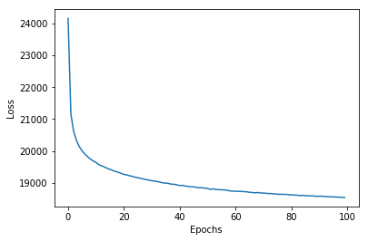
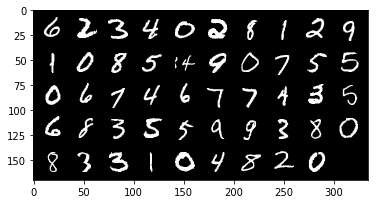
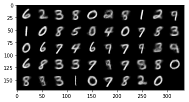
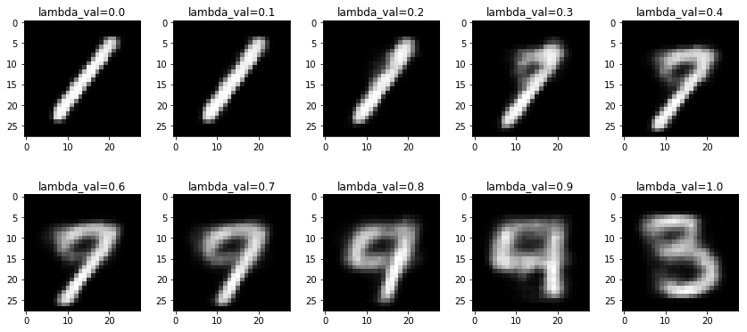
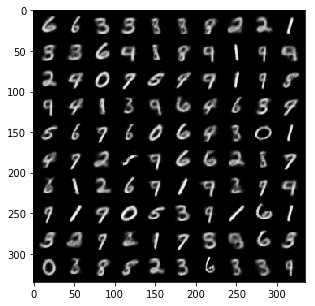
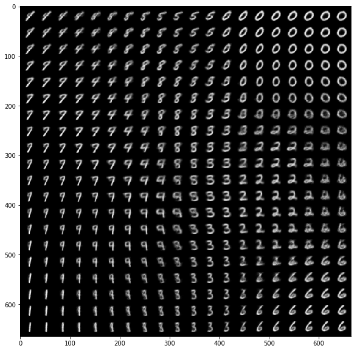

Week 7: Variational Inference II and VAEs
Week 7: Variational Inference II and VAEs
Overview. Week 6 set up variational inference (VI): when the posterior p(z\mid x) of a latent variable model is intractable, pick a tractable family of distributions q and find the member closest to the posterior in KL divergence. It also showed that minimizing \mathrm{KL}(q\,\|\,p(z\mid x)) is the same as maximizing the evidence lower bound (ELBO), which needs only the joint p(x,z). This week answers the question Week 6 left open: how do we actually maximize the ELBO? The first hour rewrites the ELBO in two useful forms, shows why its gradient is awkward (the distribution we average over depends on the parameters we are optimizing), and fixes this with the reparameterization trick, giving stochastic variational inference (SVI). The second hour builds the autoencoder, a neural network that compresses its input through a narrow bottleneck and reconstructs it, and then combines it with VI to get the variational autoencoder (VAE): an encoder network that outputs an approximate posterior q_\phi(z\mid x), a decoder network that outputs a likelihood p_\theta(x\mid z), and the negative ELBO as the training loss.
The tutorial derives the same VAE from the latent-variable-model side, and walks through a PyTorch notebook that trains a VAE on handwritten digits. Both get their own parts at the end of this chapter (Tutorial: the VAE as a latent variable model and Code walk-through: the VAE notebook).
Skipped: the title slide, the two agenda slides (slides 2 and 15, folded into this paragraph), and the closing summary slide (folded into Summary).
Notation used in this chapter. We follow the lecture: z is the latent variable, \phi are the parameters of the approximate posterior q_\phi (the encoder in a VAE), and \theta are the parameters of the likelihood p_\theta(x\mid z) (the decoder). Week 6 called the variational parameters \lambda; they are the same thing, now called \phi. The tutorial uses different letters, and Tutorial: the VAE as a latent variable model starts with a translation table.
Recap: posterior inference in latent variable models
The lecture opens by restating the setting of Week 6 (Posterior inference in latent variable models in Week 6). A latent variable model factors the joint distribution of observed data x and unobserved (latent) variables z as
p(x,z) = p(z)\,p(x\mid z),
where p(z) is the prior and p(x\mid z) is the likelihood. The TrueSkill model of Week 4 is one example: the skills are z and the game outcomes are x.
What we want is the posterior, the distribution of the unobserved variables given the observed ones:
p(z\mid x) = \frac{p(x,z)}{p(x)} = \frac{p(x,z)}{\int p(x,z)\,dz}.
The numerator is easy to evaluate. The denominator, the evidence p(x)=\int p(x,z)\,dz, is an integral over every latent variable at once, and we assume throughout that it is hard to compute (Why the posterior is hard in Week 6).
What the symbols stand for:
- x: the observed data. z: the latent (unobserved) variables.
- p(z): the prior, what we believe about z before seeing x.
- p(x\mid z): the likelihood, how probable the data are for a given z.
- p(x,z): the joint, prior times likelihood.
- p(z\mid x): the posterior, what we believe about z after seeing x.
- p(x): the evidence, the total probability of the data averaged over every z.
Taking the equations apart:
- p(x,z) = p(z)\,p(x\mid z): to score a pair (x,z), first ask how plausible z is, then how well z explains x.
- p(z\mid x) = p(x,z)/p(x): the posterior is the joint rescaled so that it sums (or integrates) to 1 over z.
- p(x) = \int p(x,z)\,dz: the rescaling constant adds up the joint over every possible z. This sum is the hard part.
A teaching example. Let z\in\{0,1\} with p(z=1) = 0.3, and let p(x=1\mid z=1) = 0.8, p(x=1\mid z=0) = 0.1. We observe x = 1.
- Joint: p(x=1,z=1) = 0.3\times0.8 = 0.24 and p(x=1,z=0) = 0.7\times0.1 = 0.07.
- Evidence: p(x=1) = 0.24 + 0.07 = 0.31.
- Posterior: p(z=1\mid x=1) = 0.24/0.31\approx0.774.
With one binary latent variable the evidence is a sum of 2 terms. With 30 binary latent variables it is a sum of 2^{30}\approx1.07 billion terms, which is why we treat it as intractable.
Key takeaways.
- We want the posterior: what the hidden variables probably were, given the data we saw. Bayes’ rule gives it as the joint divided by the evidence.
- The joint is easy to compute for any single guess of z. The evidence is not, because it adds up the joint over every possible z, and that count explodes as the number of latent variables grows. Everything this week is a way around computing the evidence.
Variational methods
Variational inference turns this integration problem into an optimization problem (Variational methods in Week 6). It has two steps:
- Choose a tractable parametric distribution q_\phi(z) with parameters \phi. This distribution will approximate p(z\mid x). For example, q_\phi(z) = \mathcal N(z\mid\mu,\Sigma) with \phi=(\mu,\Sigma).
- Choose some notion of “distance” between q_\phi(z) and p(z\mid x) that can be estimated efficiently, and minimize it over \phi. Usually this is the reverse KL divergence \mathrm{KL}(q_\phi(z)\,\|\,p(z\mid x)) (Why variational inference uses the I-projection in Week 6).
The word “distance” is in quotes on the slide because the KL divergence is not a true distance: it is not symmetric (The KL divergence in Week 6).
What the symbols stand for:
- q_\phi(z): the approximating distribution, chosen from a family we can work with.
- \phi: its adjustable parameters, for a Gaussian the mean \mu and covariance \Sigma.
- \mathrm{KL}(q_\phi(z)\,\|\,p(z\mid x)): the reverse KL divergence, how far q_\phi is from the posterior, measured by averaging under q_\phi.
Taking the recipe apart:
- Step 1 replaces “find the posterior” by “pick the best member of a family”. The family fixes the shape (here, a bell curve); \phi fixes the position and spread.
- Step 2 turns “best” into a number we can minimize. KL is zero only when the two distributions are equal, and positive otherwise.
- KL is not a true distance: swapping its two arguments generally changes its value.
A teaching example of the asymmetry, on two outcomes. Let q = (0.5, 0.5) and p = (0.9, 0.1).
- \mathrm{KL}(q\,\|\,p) = 0.5\log\frac{0.5}{0.9} + 0.5\log\frac{0.5}{0.1}\approx -0.294 + 0.805 = 0.511.
- \mathrm{KL}(p\,\|\,q) = 0.9\log\frac{0.9}{0.5} + 0.1\log\frac{0.1}{0.5}\approx 0.529 - 0.161 = 0.368.
Same pair of distributions, two different numbers, so the order of the arguments matters.
Key takeaways.
- Instead of computing the exact posterior, we choose a family of simple distributions we can work with and search for the member closest to it. Inference becomes an optimization problem.
- “Closest” is measured with the KL divergence, which is zero only when the two distributions match. KL is not symmetric, so the order matters; variational inference uses \mathrm{KL}(q\,\|\,p), which averages under our approximation q.
The ELBO: evidence lower bound
Evaluating \mathrm{KL}(q_\phi(z)\,\|\,p(z\mid x)) directly is intractable, because it contains the posterior p(z\mid x) and therefore the evidence p(x). Instead, we solve a different optimization problem with the same answer: maximize the ELBO.
Expand the KL divergence using p(z\mid x) = p(z,x)/p(x):
\begin{aligned} \mathrm{KL}\big(q_\phi(z)\,\|\,p(z\mid x)\big) &= \mathbb{E}_{z\sim q_\phi}\left[\log\frac{q_\phi(z)}{p(z\mid x)}\right] \\ &= \mathbb{E}_{z\sim q_\phi}\left[\log\left(q_\phi(z)\cdot\frac{p(x)}{p(z,x)}\right)\right] \\ &= \mathbb{E}_{z\sim q_\phi}\left[\log\frac{q_\phi(z)}{p(z,x)}\right] + \mathbb{E}_{z\sim q_\phi}\big[\log p(x)\big] \\ &= -\mathcal{L}(\phi) + \log p(x). \end{aligned}
The last step uses that \log p(x) does not depend on z, so its expectation is itself.
Definition. The evidence lower bound (ELBO) of the variational distribution q_\phi is \mathcal{L}(\phi) = \mathbb{E}_{z\sim q_\phi}\big[\log p(z,x) - \log q_\phi(z)\big].
This is the same quantity Week 6 wrote as \mathcal L(\lambda) (Tutorial: reverse KL and the ELBO in Week 6). Since \log p(x) does not depend on \phi, the expansion says that maximizing the ELBO is the same as minimizing \mathrm{KL}(q_\phi(z)\,\|\,p(z\mid x)). The ELBO needs only the joint p(z,x), which we can evaluate, and an average under q_\phi, which we chose to be easy to work with.
Why “evidence lower bound”?
Rearranging the expansion gives
\mathcal{L}(\phi) + \mathrm{KL}\big(q_\phi(z)\,\|\,p(z\mid x)\big) = \log p(x).
The log evidence on the right is a fixed number for our data; the two terms on the left share it between them. Because the KL divergence is never negative,
\mathcal{L}(\phi) \le \log \underbrace{p(x)}_{\text{evidence}}.
So the ELBO is a lower bound on the log of the evidence, which is where the name comes from.
Figure 1. The identity \mathcal L(\phi) + \mathrm{KL} = \log p(x) as a bar of fixed length. Changing \phi only moves the boundary between the two parts.
What the symbols stand for:
- \mathcal L(\phi): the ELBO, a number that depends on the parameters \phi of q_\phi.
- \mathbb{E}_{z\sim q_\phi}[\cdot]: an average over values of z drawn from q_\phi.
- \log p(z,x): the log-joint, which we can evaluate for any z.
- \log q_\phi(z): the log-density of our approximation at z.
- \log p(x): the log evidence, a fixed number once the data are fixed.
Taking the equations apart:
- \mathcal L(\phi) = \mathbb{E}_{q_\phi}[\log p(z,x) - \log q_\phi(z)]: for each z, compare how much the model likes it with how much q_\phi likes it, then average under q_\phi.
- \mathrm{KL}(q_\phi\,\|\,p(z\mid x)) = -\mathcal L(\phi) + \log p(x): the KL we want to shrink is the log evidence minus the ELBO.
- \mathcal L(\phi) + \mathrm{KL} = \log p(x): a fixed total split into two parts. Raising one part lowers the other.
- \mathcal L(\phi)\le\log p(x): because KL is never negative, the ELBO can never exceed the log evidence.
A teaching example, continuing the two-state model from the first recap (p(x=1,z=1) = 0.24, p(x=1,z=0) = 0.07, so \log p(x)=\log0.31\approx-1.171). Take q(z=1) = 0.5, q(z=0) = 0.5.
- ELBO: 0.5\big(\log0.24 - \log0.5\big) + 0.5\big(\log0.07-\log0.5\big)\approx -0.367 - 0.983 = -1.350.
- Gap: -1.171 - (-1.350) = 0.179.
- Direct check: the posterior is (0.774, 0.226), and \mathrm{KL}(q\,\|\,p(z\mid x)) = 0.5\log\frac{0.5}{0.774} + 0.5\log\frac{0.5}{0.226}\approx0.179. The gap is exactly this KL.
If we instead set q(z=1)=0.774, the posterior itself, the gap becomes 0 and the ELBO equals -1.171.
Key takeaways.
- The KL we want to shrink contains the evidence, which we cannot compute. The ELBO is the part we can compute, and the two are tied together: log evidence = ELBO + KL.
- The log evidence is a fixed number, so every unit we add to the ELBO is a unit taken off the KL. Maximizing the ELBO minimizes the distance to the posterior without ever computing the posterior.
- Because KL is never negative, the ELBO can never exceed the log evidence. That is where the name “lower bound” comes from.
Two formulations of the ELBO
The ELBO can be split in two different ways, and each split says something different about what maximizing it does.
First split: log-joint plus entropy. Separate the two terms inside the expectation:
\begin{aligned} \mathcal{L}(\phi) &= \underbrace{\mathbb{E}_{z\sim q_\phi}\big[\log p(z,x)\big]}_{\text{expected log-joint}} \\ &\quad + \underbrace{\mathbb{E}_{z\sim q_\phi}\big[-\log q_\phi(z)\big]}_{\text{entropy } H(q_\phi)}. \end{aligned}
The second term is the entropy of q_\phi (The KL divergence in Week 6). Maximizing the ELBO therefore pulls in two directions: put q_\phi’s mass where the joint p(z,x) is large, but keep q_\phi spread out. Without the entropy term, the best q_\phi would concentrate all its mass on the single most probable z. This is the same “expected potential plus entropy” shape that Week 6’s mean-field objective had (Mean field for an MRF in Week 6).
Second split: expected log-likelihood minus KL to the prior. Write the joint as p(x,z) = p(x\mid z)\,p(z) and regroup:
\begin{aligned} \mathcal{L}(\phi) &= \mathbb{E}_{q_\phi(z)}\big[\log p(x,z) - \log q_\phi(z)\big] \\ &= \mathbb{E}_{q_\phi(z)}\big[\log p(x\mid z) + \log p(z) - \log q_\phi(z)\big] \\ &= \underbrace{\mathbb{E}_{q_\phi(z)}\big[\log p(x\mid z)\big]}_{\text{expected log-likelihood}} \\ &\quad - \underbrace{\mathrm{KL}\big(q_\phi(z)\,\|\,p(z)\big)}_{\text{KL to prior}}. \end{aligned}
The last line uses \mathbb{E}_{q_\phi}[\log p(z) - \log q_\phi(z)] = -\mathbb{E}_{q_\phi}[\log q_\phi(z)/p(z)] = -\mathrm{KL}(q_\phi\,\|\,p(z)). Maximizing the ELBO now reads as: choose q_\phi so that latent values drawn from it explain the data well (high log-likelihood), while staying close to the prior.
Note which KL appears here. The KL in The ELBO: evidence lower bound compared q_\phi to the posterior p(z\mid x) and was intractable. The KL in this second split compares q_\phi to the prior p(z), which we chose ourselves, and for Gaussian choices it has a closed form (Tutorial question 7: What are the two terms of the loss?). The lecture says this second formulation is the one the VAE uses.
What the symbols stand for:
- \mathbb{E}_{q_\phi}[\log p(z,x)]: the expected log-joint, how well q_\phi’s typical z values score under the model.
- H(q_\phi) = \mathbb{E}_{q_\phi}[-\log q_\phi(z)]: the entropy of q_\phi, how spread out it is.
- \mathbb{E}_{q_\phi}[\log p(x\mid z)]: the expected log-likelihood, how well q_\phi’s typical z values explain the data.
- \mathrm{KL}(q_\phi(z)\,\|\,p(z)): the KL to the prior, how far q_\phi strays from the prior.
Taking the two splits apart:
- First split, \mathcal L = \text{expected log-joint} + H(q_\phi): the first term pulls q_\phi toward high-probability z; the entropy stops it from collapsing onto a single point.
- Second split, \mathcal L = \text{expected log-likelihood} - \mathrm{KL}(q_\phi\,\|\,p(z)): obtained by writing \log p(x,z) = \log p(x\mid z) + \log p(z) and grouping \log p(z) - \log q_\phi(z) into a KL.
- The KL here is to the prior, which we chose, not to the posterior, which we cannot compute.
A teaching example with the same two-state model and q = (0.5, 0.5); recall p(z=1)=0.3, p(x=1\mid z=1)=0.8, p(x=1\mid z=0)=0.1.
- First split: expected log-joint = 0.5\log0.24 + 0.5\log0.07\approx-2.043; entropy =\log2\approx0.693; sum \approx-1.350.
- Second split: expected log-likelihood = 0.5\log0.8 + 0.5\log0.1\approx-1.263; KL to prior = 0.5\log\frac{0.5}{0.3} + 0.5\log\frac{0.5}{0.7}\approx0.087; difference \approx-1.350.
Both splits give the ELBO from the previous recap. They are two readings of one number.
Key takeaways.
- The two splits are the same number read two ways. The first says: put q on values the model likes, but stay spread out. The second says: explain the data well, but do not stray far from the prior.
- The second reading is the one the VAE later uses as its loss: a reconstruction term plus a KL-to-prior penalty.
Maximizing the ELBO: gradients of an expectation
To maximize \mathcal L(\phi) we follow its gradient. Recall that \nabla\mathcal L(\phi) points in the direction of steepest ascent, so the update is
\phi_{t+1} = \phi_t + s_t\,\nabla_\phi\mathcal L(\phi_t),
with step size s_t > 0. The slide calls this “gradient descent”; because we are maximizing, the plus sign makes it gradient ascent (descent on -\mathcal L). For stochastic gradient methods, an unbiased estimate of \nabla_\phi\mathcal L is enough.
The difficulty is that \mathcal L(\phi) = \mathbb{E}_{z\sim q_\phi}[\log p(x,z) - \log q_\phi(z)] is an expectation, and we need the gradient of an expectation. Consider the general form \nabla_\phi\,\mathbb{E}_Z[f(Z,\phi)].
Easy case: the distribution of Z does not depend on \phi. Then the gradient can move inside the expectation,
\nabla_\phi\,\mathbb{E}_Z\big[f(Z,\phi)\big] = \mathbb{E}_Z\big[\nabla_\phi f(Z,\phi)\big],
and the right side is estimated by simple Monte Carlo (Simple Monte Carlo in Week 4): draw z_1,\dots,z_n from the distribution of Z and average,
\nabla_\phi\,\mathbb{E}_Z\big[f(Z,\phi)\big] \approx \frac1n\sum_{i=1}^n\nabla_\phi f(z_i,\phi).
Our case: the distribution of z is q_\phi, which depends on \phi. Now \phi affects the expectation in two ways: through the function inside, and through which z values are likely. Moving the gradient inside captures only the first, so
\begin{aligned} &\nabla_\phi\,\mathbb{E}_{z\sim q_\phi}\big[\log p(x,z) - \log q_\phi(z)\big] \\ &\qquad\ne\ \mathbb{E}_{z\sim q_\phi}\Big[\nabla_\phi\big(\log p(x,z) - \log q_\phi(z)\big)\Big]. \end{aligned}
Worked example: why the gradient cannot move inside. Take the lecture’s Gaussian with unit variance, z\sim\mathcal N(\mu,1), so \phi=\mu, and the function f(z)=z^2.
- True gradient. \mathbb{E}[z^2] = \mathrm{Var}(z) + (\mathbb{E}z)^2 = 1 + \mu^2, so \nabla_\mu\,\mathbb{E}[z^2] = 2\mu. At \mu=1 this is 2.
- Gradient moved inside. f(z)=z^2 does not contain \mu at all, so \nabla_\mu f(z) = 0 for every z, and \mathbb{E}[\nabla_\mu f(z)] = 0.
The answers disagree. All of the dependence on \mu lives in the sampling distribution, which the naive swap ignores. Moving the mean right makes large values of z^2 more likely, and only the true gradient sees that.
What the symbols stand for:
- \phi_t: the parameters after t steps. s_t > 0: the step size at step t.
- \nabla_\phi\mathcal L(\phi_t): the gradient, the direction in which the ELBO rises fastest.
- f(Z,\phi): a generic function being averaged, playing the role of \log p(x,z) - \log q_\phi(z).
- z_1,\dots,z_n: random draws used for a Monte Carlo average.
Taking the equations apart:
- \phi_{t+1} = \phi_t + s_t\nabla_\phi\mathcal L(\phi_t): take a step of size s_t uphill. The plus sign makes it ascent.
- Easy case, \nabla_\phi\mathbb{E}_Z[f] = \mathbb{E}_Z[\nabla_\phi f]: if the distribution of Z ignores \phi, differentiate each sample and then average.
- Our case: q_\phi depends on \phi, so \phi also changes which z are likely. Differentiating inside the expectation misses that effect.
A teaching example of the easy case. Let Z\sim\mathcal N(0,1), fixed, and f(Z,\phi) = (\phi Z)^2. Then \mathbb{E}[f] = \phi^2 and the true gradient is 2\phi.
- Inside the expectation: \nabla_\phi f = 2\phi Z^2. With draws z = 0.8, -1.1, 1.0, the squares average to (0.64+1.21+1.00)/3 = 0.95.
- At \phi = 3: estimate 2\cdot3\cdot0.95 = 5.7, close to the true 6.
- One ascent step with s_t = 0.1: \phi_{t+1} = 3 + 0.1\times5.7 = 3.57.
A teaching example of our case. Let z\sim\mathcal N(\mu,1) and f(z) = 3z. Then \mathbb{E}[3z] = 3\mu, whose gradient in \mu is 3. But f contains no \mu, so the gradient moved inside is 0. All of the dependence on \mu is in the sampling distribution.
Key takeaways.
- We maximize the ELBO by gradient ascent, but the ELBO is an average over samples from q_\phi, and \phi also decides which samples we get.
- If the sampling distribution ignored \phi, we could differentiate each sample and average. Here it does not, so that shortcut silently drops part of the gradient (in the teaching example it returns 0 when the true gradient is 3).
The reparameterization trick
In some situations there is a way out. Break the sampling of z into two parts:
- Sample a random variable \epsilon from a distribution p_0(\epsilon) with fixed (or no) parameters, such as a uniform distribution or a standard normal.
- Compute z deterministically from \phi and \epsilon, using a function T chosen so that the result has the right distribution: \epsilon\sim p_0(\epsilon),\quad z = T(\epsilon,\phi) \quad\Longrightarrow\quad z\sim q_\phi(z).
Definition. The reparameterization trick writes a sample z\sim q_\phi as a deterministic, differentiable function z=T(\epsilon,\phi) of the parameters \phi and a noise variable \epsilon\sim p_0 whose distribution does not depend on \phi.
The lecture’s example is the Gaussian. With \phi=(\mu,\sigma), where \sigma is the standard deviation,
\epsilon\sim\mathcal N(0,1),\qquad z = T(\epsilon,\phi) = \mu + \sigma\epsilon \quad\Longrightarrow\quad z\sim\mathcal N(\mu,\sigma^2).
Shifting a standard normal by \mu and scaling it by \sigma gives a normal with mean \mu and variance \sigma^2. (The slide writes \mathcal N(\mu,\sigma) with \sigma as the standard deviation; we write the variance \sigma^2 explicitly.)
Take \epsilon\sim\mathcal N(0,1), \sigma>0, and z=\mu+\sigma\epsilon. We check the mean and the variance first, then the full distribution.
Mean. Expectation is linear, so \mathbb E[z]=\mu+\sigma\,\mathbb E[\epsilon]=\mu+\sigma\cdot 0=\mu.
Variance. Adding a constant leaves the variance unchanged, and scaling by \sigma multiplies it by \sigma^2, so \operatorname{Var}(z)=\sigma^2\operatorname{Var}(\epsilon)=\sigma^2\cdot 1=\sigma^2.
Full distribution. Mean and variance alone do not establish that the result is normal, so we work with the cumulative distribution function. Because \sigma>0, the event z\le t is the same as \epsilon\le (t-\mu)/\sigma:
F_z(t)=P(z\le t)=P\!\left(\epsilon\le\frac{t-\mu}{\sigma}\right)=\Phi\!\left(\frac{t-\mu}{\sigma}\right),
where \Phi is the standard normal CDF. Differentiating in t with the chain rule gives the density
q(t)=\frac{1}{\sigma}\,\varphi\!\left(\frac{t-\mu}{\sigma}\right)=\frac{1}{\sqrt{2\pi\sigma^2}}\exp\!\left(-\frac{(t-\mu)^2}{2\sigma^2}\right),
with \varphi the standard normal density. This is the density of \mathcal N(\mu,\sigma^2), so z\sim\mathcal N(\mu,\sigma^2).
The factor 1/\sigma is the Jacobian of the scaling step, the same one that appeared in the change-of-variables argument for q_\phi(z)\,dz=p_0(\epsilon)\,d\epsilon.
The randomness now comes from \epsilon, whose density p_0 does not depend on \phi. Substituting z = T(\phi,\epsilon) puts us back in the easy case of Maximizing the ELBO: gradients of an expectation:
\begin{aligned} \nabla_\phi\mathcal{L}(\phi) &= \nabla_\phi\,\mathbb{E}_{z\sim q_\phi(z)}\big[\log p(x,z) - \log q_\phi(z)\big] \\ &= \nabla_\phi\,\mathbb{E}_{\epsilon\sim p_0(\epsilon)}\big[\log p(x,T(\phi,\epsilon)) - \log q_\phi(T(\phi,\epsilon))\big] \\ &= \mathbb{E}_{\epsilon\sim p_0(\epsilon)}\Big[\nabla_\phi\big(\log p(x,T(\phi,\epsilon)) - \log q_\phi(T(\phi,\epsilon))\big)\Big]. \end{aligned}
The second line is the same expectation written in terms of \epsilon; the third line is allowed because the distribution we average over, p_0, no longer depends on \phi. All the dependence on \phi is now inside the function, where the chain rule (backpropagation, in a neural network) can reach it.
Worked example, continued. Return to z\sim\mathcal N(\mu,1) and f(z)=z^2. Reparameterize as z = \mu + \epsilon with \epsilon\sim\mathcal N(0,1). Then \nabla_\mu f(\mu+\epsilon) = 2(\mu+\epsilon), \qquad \mathbb{E}_\epsilon\big[2(\mu+\epsilon)\big] = 2\mu, since \mathbb{E}[\epsilon]=0. This matches the true gradient 2\mu from Maximizing the ELBO: gradients of an expectation. The dependence on \mu that the naive swap missed is now visible to the derivative, because \mu appears inside f(\mu+\epsilon).
Figure 2. Before reparameterization, z is drawn at random from a distribution that depends on \phi, and there is no derivative of “draw a sample” with respect to \phi. After it, the randomness enters from outside through \epsilon, and z is an ordinary differentiable function of \phi.
The trick needs T to exist and be differentiable in \phi. It works for Gaussians (and any location-scale family). The lecture says “in some situations”; for a discrete q_\phi, for instance, there is no differentiable T of this kind.
What the symbols stand for:
- \epsilon: noise drawn from a fixed distribution p_0 (for example \mathcal N(0,1)) that does not depend on \phi.
- T(\epsilon,\phi): a deterministic, differentiable function that turns the noise into a sample of q_\phi.
- \mu, \sigma: the mean and standard deviation of a Gaussian q_\phi, so \phi = (\mu,\sigma).
Taking the equations apart:
- z = \mu + \sigma\epsilon: shift the noise by \mu and stretch it by \sigma. The result has distribution \mathcal N(\mu,\sigma^2).
- Line 2 of the derivation rewrites the same expectation as an average over \epsilon instead of over z.
- Line 3 moves the gradient inside, which is allowed now because p_0 does not depend on \phi.
- \partial z/\partial\mu = 1 and \partial z/\partial\sigma = \epsilon: the chain rule can now reach both parameters through z.
A teaching example, this time for the gradient in \sigma. Let q = \mathcal N(\mu,\sigma^2) with \mu = 2, \sigma = 0.5, and f(z) = z^2.
- True value: \mathbb{E}[z^2] = \mu^2 + \sigma^2, so \nabla_\sigma\mathbb{E}[z^2] = 2\sigma = 1.
- Reparameterized: \nabla_\sigma(\mu + \sigma\epsilon)^2 = 2(\mu+\sigma\epsilon)\,\epsilon. Its average is 2\mu\,\mathbb{E}[\epsilon] + 2\sigma\,\mathbb{E}[\epsilon^2] = 0 + 2\sigma = 1. It matches.
- One draw, \epsilon = 0.4: z = 2.2, and the single-sample gradient is 2(2.2)(0.4) = 1.76. One draw is unbiased but noisy, which is the next section’s topic.
Key takeaways.
- If we draw z directly from q_\phi, we cannot take a derivative through it. A sample is just a number, not a function of \phi, so there is no gradient to pass back to the parameters.
- The trick draws the randomness from a fixed source \epsilon that has nothing to do with \phi, then builds z = \mu + \sigma\epsilon. Now z is an ordinary function of \phi, and the chain rule (backpropagation) can reach \mu and \sigma.
- It only works when there is a differentiable recipe that turns noise into a sample. Gaussians have one; discrete distributions do not.
Stochastic variational inference
The reparameterized gradient is still an expectation, \mathbb{E}_{\epsilon\sim p_0}[\nabla_\phi(\cdots)], which in general we cannot compute exactly. Instead we compute a simple Monte Carlo estimate of it.
Definition. Stochastic variational inference (SVI) maximizes the ELBO by stochastic gradient ascent, using at each step a Monte Carlo estimate of the reparameterized gradient from m noise samples \epsilon_1,\dots,\epsilon_m\sim p_0: \nabla_\phi\mathcal L(\phi) \approx \frac1m\sum_{i=1}^m\nabla_\phi\Big[\log p\big(x,T(\phi,\epsilon_i)\big) - \log q_\phi\big(T(\phi,\epsilon_i)\big)\Big].
Each term in the sum is the exact gradient for one fixed draw \epsilon_i; averaging m of them gives an unbiased estimate of the true gradient, as in Week 4’s simple Monte Carlo. The lecture calls the m draws a “mini-batch of size m”. Here that means m noise samples for the same data x, not m data points. (When the data set is large, we will also average over a mini-batch of data points; the VAE pipeline in Variational autoencoders does both.)
Worked example: one SVI gradient estimate. Continue with f(z)=z^2, z=\mu+\epsilon, and \mu=1, so the true gradient is 2\mu=2. Draw m=3 noise values, say \epsilon_1=0.5, \epsilon_2=-1.2, \epsilon_3=0.3. The per-sample gradients 2(\mu+\epsilon_i) are
2(1.5)=3.0,\qquad 2(-0.2)=-0.4,\qquad 2(1.3)=2.6,
and their average is 5.2/3\approx1.73. This is close to, but not equal to, the true value 2. Another three draws would give a different estimate; on average over draws the estimate equals 2, and its spread shrinks as m grows.
The same setup with MCMC. Here the target is the posterior q = \mathcal N(1,1), and we use a Metropolis chain to approximate it. Start at z_0=1 and propose each move by adding the same noise values as before, z' = z + \epsilon_i, accepting with probability \min\{1, q(z')/q(z)\}. We use the same uniform draws u to decide acceptance. The chain is:
- Step 1: propose z'=1.5. The ratio is e^{-0.125}\approx0.88, and u=0.60 is below it, so we accept. State: z_1=1.5.
- Step 2: propose z'=0.3. The ratio is e^{-0.12}\approx0.89, and u=0.95 is above it, so we reject. State: z_2=1.5.
- Step 3: propose z'=1.8. The ratio is e^{-0.195}\approx0.82, and u=0.50 is below it, so we accept. State: z_3=1.8.
Averaging z^2 over the three states after burn-in (here we drop z_0) gives (2.25+2.25+3.24)/3 = 2.58, which estimates \mathbb{E}[z^2]=2. Two things differ from SVI. First, the three states are dependent, since each one is built from the previous one, so they are worth fewer than three independent draws. Second, the chain gives an estimate of the expectation \mathbb{E}[z^2], not of its gradient with respect to \mu. To get a gradient we would need a second chain at \mu+h and \mu-h and a finite difference between them. The reparameterized estimate above gets the gradient directly from each noise draw, without rerunning anything.
MCMC vs SVI
We now have two answers to an intractable posterior: Week 5’s Markov chain Monte Carlo samples from it, and SVI fits an approximation to it. The lecture compares them:
| MCMC (Week 5) | SVI (this week) | |
|---|---|---|
| Pros | Accurate results, at least asymptotically; no approximating family, so no built-in approximation; flexible; handles multimodal posteriors | Faster convergence; scales to large data and models; easy to use |
| Cons | High computational cost; hyperparameters to tune; convergence issues; inefficient when the posterior has complex dependencies | Approximate results, and it can collapse to something degenerate; limited flexibility (only as good as the family q_\phi); sensitive to hyperparameters |
“No approximation” for MCMC means that, run long enough, its samples come from the exact posterior. SVI can never do better than the best member of its family. Recall from Week 6 that the reverse KL is mode-seeking (Which direction? I-projection and M-projection in Week 6), which is one reason SVI can lock onto one mode of a multimodal posterior.
The table hides the main difference, which is that the two methods solve the problem in different ways. MCMC is a sampling method. It runs a Markov chain whose long-run distribution is the posterior and keeps the states it visits as samples. Each step usually needs the likelihood of the full dataset, so the cost grows with the data. The samples are exact only in the limit of many steps (asymptotically exact), and consecutive samples are dependent, so a chain needs burn-in and gives fewer effective samples than its length suggests.
VI is an optimization method. It never draws samples from the posterior. It picks a family q_\phi and adjusts \phi to bring q_\phi as close as possible to the posterior in KL divergence, which turns inference into a curve-fitting problem. SVI is VI with minibatches: each step uses a random subset of the data to estimate the gradient of the ELBO, so the cost of a step does not grow with the dataset size. The update is gradient ascent on the ELBO. We maximize the ELBO, so the step adds the gradient rather than subtracting it. Equivalently, it is gradient descent on the negative ELBO, the loss that neural network libraries minimize.
Both methods use Monte Carlo averages, but for different things. MCMC averages over the states of its chain, which are samples from the posterior. SVI averages over noise draws \epsilon to estimate a gradient, so its averages are not samples from the posterior.
Homework note. The lecture says SVI will probably come up again in Assignment 3. The reparameterized gradient and its Monte Carlo estimate above are the pieces to understand; any specific estimator the assignment asks for is left to the assignment.
What the symbols stand for:
- m: the number of noise samples per gradient estimate.
- \epsilon_1,\dots,\epsilon_m: independent draws from p_0.
- T(\phi,\epsilon_i): the sample z_i produced by the i-th noise draw.
Taking the estimator apart:
- Inside the sum: the exact gradient of the ELBO integrand for one fixed noise value \epsilon_i.
- \frac1m\sum_{i=1}^m: average these m gradients. On average over draws, the result equals the true gradient (unbiased).
- Larger m gives a less noisy estimate at the cost of more computation per step.
- The MCMC vs SVI table: MCMC targets the exact posterior but is slow; SVI is fast but can be no better than the best member of the family q_\phi.
A teaching example, continuing the previous recap (\mu = 2, \sigma = 0.5, f(z)=z^2, true \sigma-gradient = 1). Draw m = 3 noise values \epsilon = 0.4, -1, 0.6.
- \epsilon_1=0.4: z = 2.2, gradient 2(2.2)(0.4) = 1.76.
- \epsilon_2=-1: z = 1.5, gradient 2(1.5)(-1) = -3.00.
- \epsilon_3=0.6: z = 2.3, gradient 2(2.3)(0.6) = 2.76.
The average is 1.52/3\approx0.51, about half the true value. A single estimate can be far off; SVI still works because many such noisy steps point uphill on average.
Key takeaways.
- The reparameterized gradient is still an average we cannot compute exactly, so we estimate it from a few noise draws. One estimate can be far off, but it is right on average, so many noisy uphill steps still climb the ELBO.
- Against MCMC: SVI is fast and scales to large data, but it can only be as good as the best member of the chosen family. MCMC targets the exact posterior but is slow.
Autoencoders
The second half of the lecture changes topic, then joins back up with VI. The new question is: how can a neural network find a compact representation of high-dimensional data without labels?
A prerequisite: principal component analysis
The lecture compares autoencoders to principal component analysis, which these notes have not introduced, so here is a short version.
Definition. Principal component analysis (PCA) finds the M orthogonal directions along which D-dimensional data vary the most (the first M principal components). It represents each data point x\in\mathbb R^D by its M coordinates along those directions, and reconstructs an approximation of x by mapping those coordinates back linearly. Among all ways of projecting onto an M-dimensional linear subspace, this one has the smallest average squared reconstruction error.
PCA is a form of dimensionality reduction: M numbers per data point instead of D. Its limitation is that both the compression and the reconstruction are linear maps, so the data can only be summarized by a flat subspace.
Nonlinear dimension reduction with a bottleneck
Neural networks can do nonlinear dimensionality reduction. Take a multilayer perceptron with D inputs, D outputs, and a hidden layer of M units with M < D, and train it to output its own input. The hidden layer is a bottleneck: everything the network needs to reproduce x has to be squeezed through M numbers.
Definition. An autoencoder is a neural network trained to reconstruct its input. It has an encoder g that maps the input to a code z = g(x) in a lower-dimensional feature (latent) space, and a decoder f that maps the code back to a reconstruction \tilde x = f(z) in the data space. Training makes \tilde x = f(g(x)) \approx x.
Figure 3. An autoencoder with D=6 inputs and outputs and an M=2 bottleneck. The network is trained so that the output reproduces the input.
A 2-layer autoencoder
With one hidden layer, the reconstruction of input x is
y_k(x,w) = \sum_{j=1}^M w^{(2)}_{kj}\,\sigma\Big(\sum_{i=1}^D w^{(1)}_{ji}\,x_i\Big), \qquad k=1,\dots,D.
The inner sum computes hidden unit j from the input with first-layer weights w^{(1)}; the outer sum computes output k from the M hidden units with second-layer weights w^{(2)}. Here \sigma is the hidden layer’s activation function, a fixed nonlinearity applied to each hidden unit. It is not a standard deviation; the letter \sigma means a standard deviation everywhere else in this chapter.
The weights w are chosen by minimizing the reconstruction error over the N training points,
E(w) = \frac12\sum_{n=1}^N\big\|y(x_n,w) - x_n\big\|^2,
the sum of squared differences between each input and its reconstruction.
If the hidden and output layers are linear (the activation is the identity), this is essentially PCA: the lecture states that the M hidden units then span the same space as the first M principal components. The weights need not equal the principal directions themselves, only span the same subspace. So a linear autoencoder can do no better than PCA, and the reason to use a neural network is the nonlinearity.
Deep autoencoders
We can put extra nonlinear hidden layers between the input and the bottleneck, and between the bottleneck and the output. This gives a nonlinear generalization of PCA. The network is still trained by minimizing the reconstruction error. The trade-off the lecture notes is that deeper autoencoders can be harder to train.
Geometric picture. The lecture illustrates a network with two nonlinear hidden layers for D=3 inputs and M=2 bottleneck units. The encoder is a mapping F_1 from the 3-dimensional data space onto a 2-dimensional region S: a nonlinear projection of each point to M coordinates. The decoder is a mapping F_2 from that 2-dimensional region back into 3-dimensional space, where its image is a curved 2-dimensional surface. PCA can only reconstruct onto a flat plane; a deep autoencoder can reconstruct onto a curved surface that follows the data.
Examples from the lecture. The lecture shows image reconstructions in three rows: the real images, a deep autoencoder with a bottleneck of 30 linear units, and 30-dimensional PCA. With the same 30 numbers per image, the deep autoencoder’s reconstructions are visibly closer to the originals. A similar comparison on MNIST handwritten digits (28 by 28 grayscale images of the digits 0 to 9) shows the same thing: deep autoencoders produce much better reconstructions.
Autoencoders: summary
An autoencoder reconstructs its input via an encoder and a decoder:
- Encoder: g(x) = z\in\mathcal F for x\in\mathcal X,
- Decoder: f(z) = \tilde x\in\mathcal X,
where \mathcal X is the data space and \mathcal F is the feature (latent) space. The code z is a compressed representation of x, and it matters that the code is a bottleneck, \dim\mathcal F\ll\dim\mathcal X. Otherwise the network could learn to copy the input unchanged and would learn nothing about its structure. The goal is \tilde x = f(g(x))\approx x.
What the symbols stand for:
- D: the dimension of the data. M: the dimension of the code, with M < D.
- g: the encoder, data to code. f: the decoder, code to reconstruction.
- z = g(x): the code. \tilde x = f(z): the reconstruction.
- w^{(1)}_{ji}: first-layer weight from input i to hidden unit j. w^{(2)}_{kj}: second-layer weight from hidden unit j to output k.
- \sigma(\cdot): the activation function here, not a standard deviation.
- E(w): the reconstruction error over N training points. \mathcal X, \mathcal F: the data space and the feature (code) space.
Taking the equations apart:
- Inner sum \sum_i w^{(1)}_{ji}x_i: hidden unit j takes a weighted sum of the D inputs; \sigma then bends it.
- Outer sum \sum_j w^{(2)}_{kj}(\cdot): output k takes a weighted sum of the M hidden values.
- E(w) = \frac12\sum_n\|y(x_n,w) - x_n\|^2: for each training point, square the difference between reconstruction and input in every coordinate, add up, and halve.
- With identity activations the whole map is linear, so the code can only describe a flat subspace, as PCA does.
A teaching example with D = 3, M = 1, identity activation. Take x = (2, 1, 0), encoder weights w^{(1)} = (0.5, 0.5, 0) and decoder weights w^{(2)} = (1, 1, 0)^\top.
- Code: z = 0.5\cdot2 + 0.5\cdot1 + 0\cdot0 = 1.5.
- Reconstruction: \tilde x = (1.5, 1.5, 0).
- Error: \tfrac12\big[(1.5-2)^2 + (1.5-1)^2 + 0^2\big] = \tfrac12(0.25+0.25) = 0.25.
Three numbers went in, one came out of the bottleneck, and the decoder rebuilt three numbers from it. Training adjusts the 6 weights to make errors like this one small across the whole data set.
Key takeaways.
- An autoencoder squeezes each input through a narrow bottleneck and then tries to rebuild it. To rebuild well, the small code has to keep the important structure of the data and drop the rest.
- With linear layers it can only find a flat subspace, the same kind of answer PCA gives. Nonlinear layers let it follow curved structure in the data.
Issues with deterministic autoencoders
The autoencoder above is deterministic: each input gets exactly one code, g(x_1)=z_1 and f(z_1)=\tilde x_1. The lecture raises two problems.
Issue 1: closeness in data space does not imply closeness in feature space. Nothing in the training objective forces two similar inputs to get similar codes:
x_1\approx x_2 \;\not\Rightarrow\; z_1\approx z_2.
The reconstruction error only asks that each code decode back to its own input. As a result, the latent space may not be continuous or allow easy interpolation. The lecture’s picture contrasts what we would like (clusters of codes that touch and blend into each other) with what we may end up with (tight clusters separated by gaps). If we then pick a code in one of the gaps, for example to generate a new image, the decoder has never been trained on anything near it and produces an unrealistic output. Figure 5 in MNIST: autoencoder vs VAE codes shows this contrast.
Issue 2: how do we measure how good a reconstruction is? The lecture’s example is a handwritten 7 whose reconstruction is also a clear 7, but shifted slightly sideways. To a person it is a good reconstruction. A simple pixel-by-pixel distance, such as the squared error E(w) above, compares each pixel with the pixel in the same position; after a shift, the ink no longer lines up, so the two images count as far apart. Choosing a metric that matches what we mean by “a good reconstruction” can be difficult.
The VAE below is designed around Issue 1. It still scores reconstructions pixel by pixel (with a different per-pixel loss, Tutorial question 7: What are the two terms of the loss?), so Issue 2 is raised here but not solved this week.
What the symbols stand for:
- x_1, x_2: two inputs. z_1 = g(x_1), z_2 = g(x_2): their codes.
- x_1\approx x_2\not\Rightarrow z_1\approx z_2: similar inputs need not get similar codes.
Taking the two issues apart:
- Issue 1: the loss E(w) checks each input against its own reconstruction only. Nothing in it compares the codes of different inputs, so the code space can have gaps the decoder never learned.
- Issue 2: E(w) compares pixel d with pixel d. A shifted copy of an image misaligns every inked pixel, so it can score worse than a much poorer reconstruction.
A teaching example of Issue 2 with a 4-pixel strip. The input is x = (0,1,0,0).
- A perfect copy shifted one pixel right, (0,0,1,0), has error \tfrac12(1^2 + 1^2) = 1.
- A blank strip, (0,0,0,0), has error \tfrac12(1^2) = 0.5.
By squared error, the blank strip is the “better” reconstruction, even though a person would pick the shifted copy.
Key takeaways.
- Training only asks each input to be rebuilt from its own code. Nothing makes the code space smooth, so similar inputs can land far apart and codes in the gaps decode to nonsense. That is why we cannot generate new data from a plain autoencoder by picking a random code.
- Pixel-by-pixel squared error can rank a blank image above a perfect copy shifted by one pixel, so a low loss does not always mean a good-looking reconstruction.
Variational autoencoders
How can we make the latent space continuous, so that nearby codes decode to similar images and there are no gaps? The lecture’s answer is to encode each input with uncertainty.
Definition. A variational autoencoder (VAE) is an autoencoder whose encoder outputs a probability distribution over codes, q_\phi(z\mid x), used as a variational approximation to the posterior p(z\mid x), and whose decoder outputs the parameters of a likelihood p_\theta(x\mid z). Encoder and decoder are trained together by maximizing the ELBO.
Instead of learning one code vector per input, the encoder learns two vectors: a vector of means \mu and a vector of standard deviations \sigma. The code for x is then a random draw from \mathcal N(\mu,\sigma^2), not a fixed point. Because each input now covers a small cloud of codes rather than a single point, and (as we will see) the clouds are pulled toward a common prior, the gaps between clusters get filled in.
VAE specifics
The VAE is VI with both distributions parameterized: the likelihood by \theta and the approximate posterior by \phi. Using the second ELBO formulation from Two formulations of the ELBO, the ELBO for one data point x is
\mathcal{L}(\theta,\phi;x) = \mathbb{E}_{z\sim q_\phi}\big[\log p_\theta(x\mid z)\big] - \mathrm{KL}\big(q_\phi(z)\,\|\,p(z)\big).
The first term rewards codes that explain x well under the decoder; the second keeps the encoder’s distribution close to the prior p(z).
The two networks are:
- Encoder (data point \to distribution q_{\phi_i}). For data point x_i, q_{\phi_i}(z) = q_{\phi_i}(z\mid x_i) = \mathcal N(\mu_i,\sigma_i^2), \qquad \phi_i = (\mu_i,\log\sigma_i). The encoder outputs \log\sigma_i rather than \sigma_i so that \sigma_i = \exp(\log\sigma_i) > 0 automatically, whatever real number the network produces.
- Decoder (code \to distribution parameter). A function f(z_i) = \theta_i, typically a neural network, maps a code to the parameters of the likelihood p_\theta(x\mid z_i).
Two clarifications.
- \log\sigma vs \log\sigma^2. The slide encodes \log\sigma; the tutorial and the code encode \log\sigma^2 (the log-variance,
logvar). These carry the same information, since \log\sigma^2 = 2\log\sigma, and both guarantee a positive standard deviation. We switch to \log\sigma^2 from Tutorial: the VAE as a latent variable model onward. - Two uses of \theta. The slide writes the decoder’s output as \theta_i, while \theta also names the decoder network’s weights. Below, \theta always means the weights, and we call the decoder’s output for a code by its role (for MNIST, the vector of pixel probabilities \mathbf p).
The VAE pipeline
For a given input (or mini-batch) x_i:
- Sample z_i\sim q_{\phi_i}(z\mid x_i). This is the code in the feature space \mathcal F.
- Run the code through the decoder and write down the likelihood p_\theta(x\mid z).
- The loss function is the negative ELBO: \ell(x;\theta,\phi) = -\mathbb{E}_{z\sim q_\phi}\big[\log p_\theta(x\mid z)\big] + \mathrm{KL}\big(q_\phi(z\mid x)\,\|\,p(z)\big).
- Use gradient-based optimization over both \phi and \theta.
The lecture uses the same letter L for this loss as for the ELBO; we write \ell for the loss to keep the sign straight. Minimizing the loss \ell is maximizing the ELBO \mathcal L.
Figure 4. One training step of a VAE, using the reparameterization of The reparameterization trick (introduced for the VAE in Example: MNIST). The KL term needs only \mu and \log\sigma^2; the reconstruction term needs the decoder’s output and the original x. Here \odot is elementwise multiplication.
After the VAE is trained
Once a VAE is trained, it is a generative model: we can produce new data that was never in the training set by sampling
z\sim p(z), \qquad \tilde x\sim p_\theta(x\mid z).
Draw a code from the prior, then draw data from the decoder’s likelihood for that code. The encoder is not used. This works because the KL-to-prior term trained the encoder’s codes to lie where the prior puts its mass, so codes drawn from the prior land in regions the decoder knows how to decode.
The z in the training step and the z in this sampling step are different draws, even though they share a symbol and a latent space.
- During training, z comes from the encoder’s distribution for one specific photo: z \sim q_\phi(z \mid x), which is \mathcal N(\mu(x), \sigma(x)^2). It depends on x, and the reparameterization trick draws it as z = \mu(x) + \sigma(x) \odot \eta. The decoder is trained to reconstruct that x from this z.
- After training, z is drawn from the prior with no input: z \sim p(z) = \mathcal N(0, I). There is no x, and no encoder is involved. The decoder turns this z into a new x.
We can also interpolate between inputs using simple vector arithmetic: encode two inputs, take points on the line between their codes, and decode each point. Interpolating in latent space does this in the tutorial’s code.
Example: MNIST
After training, we can generate a new digit. Draw z \sim \mathcal N(0, I), a vector of M numbers. For a 2D latent space, this might be z = (0.4, -1.1). The encoder is not used. The decoder takes z and outputs one probability per pixel, for all 784 pixels of a 28 \times 28 image. We display those probabilities as the image.
The result can look like a 7 even though this exact image was never in the training set. The digit class is not new, since 7s are in the training data. The image is new, because the decoder produces a plausible picture from a code it was never given. This works because the KL penalty pushed the encoder’s codes toward the region where \mathcal N(0, I) has its mass, so the decoder has learned to produce digits from codes in that region. Some draws will still look like blends of digits, because the learned features are not labelled and the decoder only approximates the training distribution.
For MNIST, the lecture makes three choices:
- Prior: the standard Gaussian, p(z) = \mathcal N(0, I).
- Likelihood: p_\theta(x\mid z) = \mathrm{Bernoulli}(\theta), one Bernoulli probability per pixel, output by the decoder.
- Approximate posterior: q_{\phi_i}(z\mid x_i) = \mathcal N(\mu_i,\sigma_i^2 I).
In the prior \mathcal N(0, I), the 0 is a vector of M zeros, so the prior is centred at the origin of the latent space. I is the M \times M identity matrix, with 1s on the diagonal and 0s elsewhere. It says each latent coordinate has variance 1 and the coordinates are uncorrelated. For a 2D latent space (M = 2), I = \begin{pmatrix} 1 & 0 \\ 0 & 1 \end{pmatrix}, so each z_i is an independent standard normal.
To get a reconstruction, we evaluate \tilde x\sim p_\theta(x\mid z), and we use neural networks as the encoder and decoder.
Two remarks. The slide’s \sigma_i^2 I is a single variance shared by every latent dimension; the tutorial and code use a separate variance for each dimension, \mathrm{diag}(\sigma_1^2,\dots,\sigma_M^2). And in practice (including the code below), the image displayed as the “reconstruction” is usually the vector of Bernoulli probabilities itself, the mean of p_\theta(x\mid z), rather than a random draw of 0/1 pixels from it.
Reparameterization inside the VAE. The encoder produces a code by sampling from q_\phi(z\mid x). That sampling step blocks gradients from flowing back into the encoder, so the encoder would not train (Figure 2, left). The fix is the trick of The reparameterization trick, now in vector form: instead of sampling z_i\sim\mathcal N(\mu_i,\sigma_i^2) directly, write
z_i = \mu_i + \sigma_i\odot\epsilon_i, \qquad \epsilon_i\sim\mathcal N(0,I).
With this, gradients flow through the entire network, from the loss through the decoder, through z_i, and into the encoder outputs \mu_i and \sigma_i (Figure 4).
What the symbols stand for:
- x: one data point, a D \times 1 vector. For MNIST, D = 784, one value per pixel.
- z: the code, an M \times 1 vector, where M is the latent dimension we choose when designing the model. The tutorial’s plots use M = 2 so the codes can be drawn on a page. Larger values are used when reconstructions matter more than plots.
- During training, z is sampled from the encoder’s distribution for one specific photo, q_\phi(z\mid x), which is M-dimensional. It depends on x, and the reparameterization trick draws it as z = \mu(x) + \sigma(x)\odot\eta.
- After training, z is sampled from the prior, \mathcal N(0,I), which is an M-vector of independent standard normal values. There is no x and no encoder.
- q_\phi(z\mid x): the encoder’s distribution over codes for input x, here \mathcal N(\mu,\sigma^2).
- \phi_i = (\mu_i,\log\sigma_i): the mean and log standard deviation for data point x_i.
- p_\theta(x\mid z): the decoder’s likelihood, with decoder weights \theta.
- p(z) = \mathcal N(0,I): the prior over codes.
- \mathcal L(\theta,\phi;x): the ELBO for one data point. \ell(x;\theta,\phi) = -\mathcal L: the training loss.
- \odot: elementwise multiplication.
Disclaimer on the parameter count. The per-point \phi_i above belongs to the standard (non-amortized) VAE. There, each data point has its own \mu_i and \log\sigma_i, each of length M, so the variational parameters total 2MN for N points and grow with the dataset. The amortized VAE used in practice shares one encoder, with weights \phi, whose size does not depend on N. The decoder weights \theta have the same size in both versions.
Taking the equations apart:
- \mathbb{E}_{z\sim q_\phi}[\log p_\theta(x\mid z)]: draw codes from the encoder, decode them, and score how probable the original x is. High means good reconstruction.
- \mathrm{KL}(q_\phi(z)\,\|\,p(z)): how far the encoder’s cloud of codes is from the prior. Small means codes stay near the origin with spread about 1.
- \ell = reconstruction penalty + KL penalty. Minimizing \ell maximizes the ELBO.
- \sigma_i = \exp(\log\sigma_i): predicting the log keeps \sigma positive for any network output.
- z_i = \mu_i + \sigma_i\odot\epsilon_i: the reparameterization trick, so gradients reach \mu_i and \sigma_i.
- After training: draw z\sim p(z), decode, and get new data.
A teaching example with a 1-dimensional code and a 2-pixel image x = (1, 0). The encoder outputs \mu = 0.6 and \log\sigma = -0.5.
- Standard deviation: \sigma = e^{-0.5}\approx0.607, so \sigma^2\approx0.368 and \log\sigma^2 = -1.
- Sample: with \epsilon = 0.5, z = 0.6 + 0.607\times0.5\approx0.903.
- Decode: suppose the decoder outputs pixel probabilities (0.8, 0.3).
- Reconstruction term: -\big[\log0.8 + \log(1-0.3)\big]\approx0.223 + 0.357 = 0.580.
- KL term, using the closed form of The second term: a closed-form KL: \tfrac12(0.368 + 0.36 - 1 + 1)\approx0.364.
- Loss: \ell\approx0.580 + 0.364 = 0.944.
Training lowers this number by making the decoder more confident on the right pixels and by keeping \mu near 0 and \sigma near 1.
Key takeaways.
- A VAE makes the encoder output a distribution over codes instead of a single point, and adds a penalty that pulls those distributions toward the \mathcal N(0,I) prior.
- The encoder outputs two vectors: \mu, the centre of the blob, and \sigma, its width in each direction. Together they describe a normal distribution over codes, q(z \mid x) = \mathcal N(\mu, \operatorname{diag}(\sigma^2)).
- Its loss is the negative ELBO: reconstruction error plus KL to the prior. The reparameterization trick is what lets gradients pass through the sampling step in the middle.
- Because training keeps codes where the prior has its mass, we can afterwards draw a code from the prior, decode it, and get new data.
Application: image denoising
Autoencoders are also useful as ordinary (non-generative) networks. A denoising autoencoder takes a noisy image as input and is trained to minimize the reconstruction error between its output and the corresponding clean image. The bottleneck forces it to keep the structure of the image and discard the noise. This requires training on noisy-clean image pairs.
The lecture contrasts this with an approach from earlier in the course: loopy belief propagation on an MRF (Tutorial example: image denoising with loopy BP in Week 4, and Question 1 of Assignment 2). Loopy BP works directly on a single noisy image, with no training data set. It still needs a probabilistic model of the image and of the noise process, written down by hand. The two methods trade a hand-built model for a data set of examples.
What the terms stand for:
- Clean image x_n: the target we want the network to output.
- Noisy image \tilde x_n: the same image with noise added; this is what the network sees as input.
- Denoising autoencoder: an ordinary autoencoder trained on noisy and clean pairs.
- Loopy belief propagation: the Week 4 method that cleans one image using a hand-built MRF model, with no training set.
Taking the idea apart, using the reconstruction error E(w) from Autoencoders:
- Ordinary autoencoder: \tfrac12\sum_n\|y(x_n,w) - x_n\|^2. The input and the target are the same image.
- Denoising autoencoder: \tfrac12\sum_n\|y(\tilde x_n,w) - x_n\|^2. The input is the noisy image, the target is the clean one. That one change is the whole method.
A teaching example with a 4-pixel strip. The clean image is x = (0, 1, 1, 0) and the noisy input is \tilde x = (0.2, 1, 0.7, 0.1).
- If the network just copies its input, the error against the clean image is \tfrac12(0.04 + 0 + 0.09 + 0.01) = 0.07.
- If it outputs (0, 0.9, 0.9, 0), the error is \tfrac12(0 + 0.01 + 0.01 + 0) = 0.01.
Copying the noise is penalized, so training pushes the network toward outputs that look like clean images.
Key takeaways.
- A denoising autoencoder learns to remove noise by being fed noisy images and graded against the clean originals. Copying its input is no longer rewarded, so it has to keep the image’s structure and drop the noise.
- Compared with loopy belief propagation from Week 4: belief propagation needs a hand-written model of images and noise but no training set; the denoising autoencoder needs a set of noisy and clean pairs but no hand-built model.
Amortized inference
So far each data point x_i has had its own variational parameters \phi_i = (\mu_i,\log\sigma_i). With N data points, that is N separate sets of parameters to optimize, and a new data point would need a fresh optimization of its own.
Why we amortize. Separate parameters become impractical as the data set grows. Take a million photos and a 20-dimensional latent space. Storing a mean and a log-variance for each photo needs 2\times20\times1{,}000{,}000 = 40{,}000{,}000 numbers. A linear encoder from 784 pixels to 40 outputs (a mean and a log-variance per dimension) needs 784\times40+40 = 31{,}400 numbers, and that count is the same whether the data set has a thousand photos or a million. Separate parameters also cannot produce a code for a photo that was not in training without optimizing a new set. The amortized encoder gives up some per-photo accuracy in exchange for a fixed-size model that handles any input in one forward pass.
Definition. Amortized inference replaces the separate variational parameters \phi_i of every data point by a single global \phi that specifies one recognition model q_\phi(z_i\mid x_i), typically a neural network that maps each x_i to the parameters of its approximate posterior: q_\phi(z_i\mid x_i) = \mathcal N\big(z_i\mid\mu_\phi(x_i),\,\Sigma_\phi(x_i)\big).
“Amortized” means the cost of inference is spread over the whole data set: the network is trained once, and afterwards the approximate posterior for any x, including one never seen in training, is a single forward pass. The lecture’s trade-off: the number of parameters goes down, at the cost of a less expressive encoder, because one set of weights is shared across all data points and cannot fit each one’s posterior as freely as a private \phi_i could.
Which KL, and which direction. Amortization changes where q’s parameters come from, not the direction of the KL divergence. Every version in this chapter writes the KL with the approximation q first and averages under q: \mathrm{KL}(q\,\|\,\cdot). Week 6 called this the reverse KL (Why variational inference uses the I-projection in Week 6). The VAE’s KL term is \mathrm{KL}(q_\phi(z\mid x)\,\|\,p(z)), which has the same shape with the prior in place of the posterior.
Swapping the two arguments gives a different number, so the direction matters. Take a posterior p(z\mid x)=(0.9,\,0.1) over two latent states and a guess q=(0.5,\,0.5), the example from Week 6 (The KL divergence in Week 6):
\mathrm{KL}(q\,\|\,p)=0.5\log\tfrac{0.5}{0.9}+0.5\log\tfrac{0.5}{0.1}\approx0.511
\mathrm{KL}(p\,\|\,q)=0.9\log\tfrac{0.9}{0.5}+0.1\log\tfrac{0.1}{0.5}\approx0.368
In \mathrm{KL}(q\,\|\,p) each term is weighted by q. The term 0.5\log\frac{0.5}{0.1}\approx0.805 is large because q puts half its mass on a state where p has only 0.1. The reverse direction penalizes q for placing mass where the target is small, and it does not penalize q for leaving some of the target’s mass uncovered.
The direction is chosen for computability. The ELBO needs an average under q, and we can draw samples from q (and differentiate them with the reparameterization trick). The other direction, \mathrm{KL}(p\,\|\,q), would average under the posterior p(z\mid x), which is the quantity we cannot evaluate.
To make the parameter savings concrete with the numbers from the tutorial’s code (The encoder and decoder): with N = 60{,}000 training images and a 2-dimensional latent space, separate parameters would mean 60{,}000\times(2+2) = 240{,}000 numbers (a mean and a log-variance per dimension per image). The amortized encoder in the code has 157{,}380 parameters (weights and biases), and that count does not grow with N.
This is a disambiguation worth holding onto. The “standard VAE” of VAE specifics, with a private (\mu_i,\sigma_i) per data point, is the non-amortized version. The VAE that people train in practice, including the one in the tutorial’s code, is amortized: the encoder network is q_\phi.
Standard vs amortized VAE
The difference is where \mu comes from. In both cases z_i is drawn from a normal distribution, so the sampling step is the same. What changes is what the symbol \mu refers to.
Standard VAE: \mu_i is a stored number. The subscript i is a label for one training photo. \mu_i is a vector of values that belongs to photo i, like a row in a table:
| photo | \mu | \log\sigma |
|---|---|---|
| x_1 | (0.6, -0.2) | (-0.5, 0.1) |
| x_2 | (1.3, 0.4) | (-0.8, -0.3) |
Training adjusts each row directly. Nothing in the formula \mu_i mentions x_i. The link to the photo exists only because the row is indexed by i. A new photo has no row, so it cannot be encoded without optimizing a new one.
Amortized VAE: what changes. The parameters are now one shared set, \phi, the weights of an encoder network. The symbol \mu_\phi is a function: a rule that takes an input and returns a mean, with the rule set by the weights \phi. For example, a linear encoder with \phi=(W,b) gives \mu_\phi(x)=Wx+b. The notation \mu_\phi(x_i) means: run x_i through this network. The subscript \phi names the weights, not a photo index. So the mean for x_i is computed from the photo rather than looked up, and the same function serves every photo, including new ones.
The sampling step keeps the same form, but its parameters now come from the network:
z_i\sim q_\phi(z\mid x_i)=\mathcal N\big(\mu_\phi(x_i),\Sigma_\phi(x_i)\big)
z_i=\mu_\phi(x_i)+\sigma_\phi(x_i)\odot\eta_i,\qquad \eta_i\sim\mathcal N(0,I)
where \sigma_\phi(x_i) is the square root of the diagonal of \Sigma_\phi(x_i). Because \mu_\phi(x_i) and \sigma_\phi(x_i) are computed from \phi, the reparameterized draw passes gradients back into the encoder’s weights.
For a given input (or mini-batch) x_i, the two pipelines differ only in step 1:
| Step | Standard VAE | Amortized VAE |
|---|---|---|
| 1. Sample a code | z_i\sim q_{\phi_i}(z\mid x_i) = \mathcal N(\mu_i,\sigma_i^2I) | z_i\sim q_\phi(z\mid x_i) = \mathcal N(\mu_\phi(x_i),\Sigma_\phi(x_i)) |
| 2. Decode | run the code through the decoder; get the likelihood p_\theta(x\mid z) | same |
| 3. Loss | \ell(x;\theta,\phi) = -\mathbb{E}_{z\sim q_\phi}[\log p_\theta(x\mid z)] + \mathrm{KL}(q_\phi(z\mid x)\,\|\,p(z)) | same |
| 4. Optimize | backpropagate \nabla_\theta\ell, \nabla_\phi\ell, using the reparameterization trick where needed | same |
Example: MNIST, amortized
The MNIST example becomes: prior p(z) = \mathcal N(0,I), likelihood p_\theta(x\mid z) = \mathrm{Bernoulli}(\theta), and approximate posterior q_\phi(z\mid x_i) = \mathcal N(\mu_\phi(x_i),\Sigma_\phi(x_i)), with neural networks as encoder and decoder:
- Encoder: g_\phi(x_i) = [\mu(x_i),\ \log\Sigma(x_i)], the mean and the log of the (diagonal) covariance.
- Decoder: f_\theta(z_i) = \theta_i, where \theta_i are the parameters of a Bernoulli random variable for each input pixel.
To get a reconstruction we again evaluate \tilde x\sim p_\theta(x\mid z). This is exactly the model the tutorial’s code builds (Code walk-through: the VAE notebook).
What the symbols stand for:
- \phi_i: separate variational parameters for data point i (the non-amortized VAE).
- \phi: one shared set of encoder weights (the amortized VAE).
- \mu_\phi(x_i), \Sigma_\phi(x_i): the mean and covariance the encoder network outputs for input x_i.
- g_\phi(x_i) = [\mu(x_i),\log\Sigma(x_i)]: the encoder’s two outputs. f_\theta(z_i): the decoder’s Bernoulli probabilities.
Taking the equation apart:
- q_\phi(z_i\mid x_i) = \mathcal N(z_i\mid\mu_\phi(x_i),\Sigma_\phi(x_i)): the approximate posterior is still a Gaussian, but its mean and covariance are now computed from x_i by a network instead of stored per data point.
- Only step 1 of the pipeline changes. Decoding, the loss, and the optimization are the same.
- Trade-off: far fewer parameters, and instant inference for new x, at the cost of one shared network that cannot fit each posterior as freely.
A teaching example of the parameter count. Take N = 1{,}000 images of 16 pixels and a 3-dimensional code.
- Non-amortized: each image stores 3 means and 3 log-variances, so 1{,}000\times6 = 6{,}000 numbers. With N = 1{,}000{,}000, it is 6 million.
- Amortized, with a single linear layer from 16 pixels to the 6 outputs: 16\times6 = 96 weights plus 6 biases, 102 numbers, for any N.
Key takeaways.
- Instead of storing and optimizing separate posterior parameters for every data point, we train one encoder network that computes them from the input.
- The parameter count no longer grows with the data set, and a new data point gets its approximate posterior in one forward pass. The price is that one shared network cannot fit every posterior as precisely. The VAE people actually train is the amortized one.
MNIST: autoencoder vs VAE codes
The lecture closes by plotting the 2-dimensional codes of MNIST test digits, coloured by digit class, for an ordinary autoencoder and for a VAE. The autoencoder’s codes form separate clusters spread over a wide range with empty space between them, as in Issue 1 of Issues with deterministic autoencoders. The VAE’s codes are packed into a compact region around the origin, where the \mathcal N(0,I) prior has its mass, with neighbouring classes touching.
Figure 5. A sketch of the contrast in the lecture’s plot (three classes shown, not ten). A code chosen in a gap of the autoencoder’s latent space decodes to something unrealistic; in the VAE, the KL-to-prior term keeps every class’s codes inside the region the prior covers, so codes drawn from the prior decode to plausible digits.
The tutorial’s code produces the VAE side of this picture directly, by decoding a grid of codes (The 2-dimensional latent space).
What the terms stand for:
- Code: the 2-dimensional point z the encoder assigns to a test digit, plotted and coloured by the digit’s class.
- Prior p(z) = \mathcal N(0,I): the distribution we sample codes from when generating; most of its mass is within about 2 units of the origin.
- KL-to-prior term: the part of the VAE loss that charges for codes whose distribution sits far from the prior.
Taking the explanation apart, using the per-dimension KL from Tutorial: the VAE as a latent variable model:
- \tfrac12(\sigma^2 + \mu^2 - 1 - \log\sigma^2): the \mu^2 term grows as a code’s mean moves away from the origin, so far-flung clusters cost loss.
- The \sigma^2 - 1 - \log\sigma^2 part is zero at \sigma^2 = 1 and positive otherwise, so codes are kept from shrinking to points. Neighbouring classes then overlap instead of leaving gaps.
- A plain autoencoder has no such term, so nothing stops its clusters from drifting apart.
A teaching example for one latent dimension with \sigma^2 = 1:
- A code centred at \mu = 0.5: KL = \tfrac12(1 + 0.25 - 1 - 0) = 0.125.
- A code centred at \mu = 4: KL = \tfrac12(1 + 16 - 1 - 0) = 8.
Moving the cluster from 0.5 to 4 costs 64 times as much KL, which is why the VAE’s codes stay packed near the origin, where prior samples land.
Key takeaways.
- Plotting the 2-dimensional codes shows the practical difference: an autoencoder’s codes form scattered clusters with empty gaps, and a VAE’s codes are packed around the origin.
- The KL-to-prior term does the packing. That is why a random code drawn from the prior decodes to a plausible digit in a VAE but not in a plain autoencoder.
Tutorial: the VAE as a latent variable model
The tutorial rebuilds the VAE from the other direction. The lecture started from an autoencoder and added uncertainty; the tutorial starts from a probabilistic model of the data, finds that maximum likelihood is intractable, and arrives at the same encoder, decoder, and loss. Each subsection below answers one question the tutorial poses or works through.
The tutorial uses different letters from the lecture. Everything below is written in the lecture’s notation:
| Quantity | Lecture (and these notes) | Tutorial slides |
|---|---|---|
| Latent variable | z | \mathbf h |
| Encoder / variational parameters | \phi | \theta |
| Decoder / model parameters | \theta | \phi |
| Probability | p(\cdot) | Pr(\cdot) |
| Normal density | \mathcal N(x;\mu,\Sigma) | \mathrm{Norm}_x[\mu,\Sigma] |
| Decoder network | f(z,\theta) | \mathbf f[\mathbf h,\phi] |
| Encoder network | g(x,\phi) | \mathbf g[\mathbf x,\theta] |
The tutorial’s \theta and \phi are swapped relative to the lecture. When reading the tutorial slides, mentally exchange them.
We also fix two dimension letters for this part: D is the dimension of the data (for MNIST, D=784 pixels, indexed by d), and M is the dimension of the latent space (indexed by m), matching the bottleneck size M of Autoencoders. The tutorial writes D for the latent dimension in its KL formula; that is our M.
The output is the same kind of number either way. A normal density evaluated at one point x returns a single number: the height of the bell at x. Switching from \sigma to \Sigma does not change that kind of output. What changes is how the spread is written down, and whether the spread can tilt.
Step 1: the general density needs a covariance matrix. For a vector v with M entries, \mathcal N(v;\mu,\Sigma)=(2\pi)^{-M/2}\,|\Sigma|^{-1/2}\exp\!\Big(-\tfrac12(v-\mu)^\top\Sigma^{-1}(v-\mu)\Big). This is the form that works for any covariance, so the textbook notation uses \Sigma.
Step 2: a diagonal \Sigma collapses to a vector of standard deviations. If \Sigma=\mathrm{diag}(\sigma_1^2,\dots,\sigma_M^2), the density factors into one bell curve per latent dimension, each with its own \sigma_m. Writing \sigma=(\sigma_1,\dots,\sigma_M) is a shorthand for this diagonal case. The density’s value is identical in both notations.
Step 3: a full \Sigma changes the shape, not just the number. If the off-diagonal entries are nonzero, the bell is stretched along correlated directions and tilted. Two 2-D examples with the same spread in each coordinate:
- \sigma=(1,1): contours are circles, because the coordinates are uncorrelated.
- \Sigma=\begin{pmatrix}1 & 0.5\\ 0.5 & 1\end{pmatrix}: contours are tilted ellipses, because the coordinates rise and fall together.
Why the VAE uses the vector. The encoder’s \Sigma is diagonal, so the reparameterization z=\mu+\sigma\odot\eta with an elementwise product works and needs only \sigma. A correlated \Sigma would need a matrix L with LL^\top=\Sigma, and the sample would be z=\mu+L\eta.
So the answer is no, not because the output changed. The notation changes because the VAE’s covariance is diagonal. When it is, \sigma and \Sigma describe the same density, and the density returns the same value. Only a non-diagonal \Sigma gives a different output, and the VAE here does not use one.
Tutorial question 1: Why decompose p(x) at all?
Why not learn the distribution of the data directly? Why introduce a hidden variable and write p(x) as an integral?
Introduce a latent variable z, write the joint as likelihood times prior, and marginalize z out:
p(x) = \int p(x,z)\,dz = \int p(x\mid z)\,p(z)\,dz.
The tutorial’s answer: relatively simple expressions for p(x\mid z) and p(z) can combine into a very complex distribution p(x). We get to specify two easy pieces, and the integral builds the complicated shape for us.
Example: a mixture of Gaussians. Let the latent variable be discrete, z\in\{1,\dots,K\}, chosen with probability \lambda_k, and let each value of z pick out one Gaussian:
p(z=k) = \lambda_k, \qquad p(x\mid z=k) = \mathcal N(x;\mu_k,\Sigma_k).
(Here \lambda_k are mixing weights, not Week 6’s variational parameters.) The joint p(x,z) places one weighted Gaussian at each value of z. Summing over z, the discrete version of the integral, gives the density of the data:
\begin{aligned} p(x) &= \sum_{k=1}^K p(x, z=k) = \sum_{k=1}^K p(x\mid z=k)\,p(z=k) \\ &= \sum_{k=1}^K \lambda_k\,\mathcal N(x;\mu_k,\Sigma_k). \end{aligned}
This is a mixture model. Each component is a single bell curve, but the sum can have several peaks.
Taking the equation apart.
- \lambda_k: the probability of choosing component k. The \lambda_k are positive and sum to 1.
- \mathcal N(x;\mu_k,\Sigma_k): the bell curve for component k, centred at \mu_k with covariance \Sigma_k.
- \sum_{k=1}^K \lambda_k\,\mathcal N(\cdot): the weighted sum. Each bell is scaled by how often its component is chosen, so the total still integrates to 1.
Figure 6. A one-dimensional mixture of three Gaussians, in the style of the tutorial’s example. Each dashed curve is \lambda_k\,\mathcal N(x;\mu_k,\sigma_k^2) for one value of z; the solid curve, their sum, is p(x).
A continuous, nonlinear version. The tutorial then makes z continuous with a standard normal prior, and lets each z produce a spherical Gaussian in data space whose mean is a neural network of z:
p(z) = \mathcal N(z; 0, I), \qquad p(x\mid z,\theta) = \mathcal N\big(x;\ f(z,\theta),\ \sigma^2 I\big).
Taking the equations apart.
- p(z)=\mathcal N(z;0,I): the prior over the code. 0 is its mean and I its covariance, so each latent dimension is an independent standard normal.
- p(x\mid z,\theta): the likelihood, the density of the data point x once the code z is fixed. The weights \theta are the only parameters of this model.
- f(z,\theta): the decoder network. It maps the code to a point in data space, and that point is the mean of the Gaussian over x.
- \sigma^2 I: the covariance of that Gaussian, the same variance in every direction. It is the round shape of the blob.
(This \sigma^2 is a fixed noise variance in data space, not the encoder’s \sigma.) The tutorial’s picture uses a 1-dimensional z and 2-dimensional x. As z varies, the mean f(z,\theta) traces a curve through the plane, and each z contributes a small round Gaussian blob centred on that curve. Integrating over z smears the blobs along the whole curve, giving a curved, banana-shaped density for x that no single Gaussian could represent. This is the mixture idea with infinitely many components, one per value of z.
The core idea. Real data often lies along a curve rather than filling a cloud. A hidden number z slides a point along that curve, and what we observe is the point plus a little noise. The model fixes two things: z sets where on the curve we are, and the noise is equally large in every direction, so each value of z gives a small round blob. Blobs for all values of z, smeared along the curve, produce a banana. A single Gaussian is a single round blob, so it cannot follow a bend. Many blobs placed along a curve can.
A real-life example. Drive a car along a bent road and record the GPS position. Let z be how far along the road we are, which we never observe directly. The road’s shape gives the curve f(z,\theta): the road point at distance z. The GPS reading x is that road point plus error. The error is roughly as large in one direction as in another, so the readings for one fixed z form a small round cloud. Over the whole trip, these clouds line up along the bend, so the readings form a banana, not a ball. The model says: one hidden distance explains a curved scatter of points.
A numeric check. Take f(z)=(z,\,z^2), a parabola standing in for the road, and \sigma=0.5, so each blob is \mathcal N(x;\,f(z),\,0.25\,I). A reading that sits exactly on the curve is at the centre of its blob. A reading one unit away from the curve is at least one unit from every centre, so each blob gives it at most \exp(-1/(2\cdot0.25)) = \exp(-2)\approx0.14 of its peak height. Readings near the road get high density and readings far off it get low density, which is what lets the model tell them apart.
Why the round shape is a choice. The curve itself, f(z,\theta), is learned by the network. The round noise is an assumption we make: the measurement error has no preferred direction and a fixed size \sigma^2. If the errors were stretched along the road, we would need a different covariance, and the model would have to learn it.
Key takeaways.
- The model writes p(x) as an integral over a hidden z. Two simple pieces, a Gaussian prior and a Gaussian likelihood, combine into a complicated density.
- A network that maps z to the centre of the blob lets simple round noise trace a curve, which a single Gaussian cannot do.
Tutorial question 2: Why is the evidence intractable?
For the nonlinear model above, can we compute p(x\mid\theta)?
The symbols. x is the data: a photo’s 784 pixels for MNIST, or a point in the plane in the tutorial’s picture. z is the latent code, a hidden number we never observe, drawn from the prior \mathcal N(0,I). \theta holds the decoder weights, which map z to the centre of the blob that x comes from. The integral adds up every code z that could have produced x.
The evidence integrates the decoder over every value of z:
\begin{aligned} p(x\mid\theta) &= \int p(x,z\mid\theta)\,dz = \int p(x\mid z,\theta)\,p(z)\,dz \\ &= \int \mathcal N\big(x;\ f(z,\theta),\ \sigma^2 I\big)\ \mathcal N(z; 0, I)\,dz. \end{aligned}
Reading the equation.
- p(x\mid\theta): the evidence, the probability of the data with z averaged out.
- \int\cdots\,dz: add up over every possible code.
- \mathcal N(x;\,f(z,\theta),\,\sigma^2 I): the likelihood, a blob centred on the decoder’s output for that code.
- \mathcal N(z;0,I): the prior, which gives codes near the origin more weight.
Why it is intractable. The decoder f is a neural network, so f(z,\theta) is a nonlinear function of z. That means the integral has no closed form: no standard formula gives its value. If f were linear, the exponent would be a quadratic in z and the integral could be done exactly. The nonlinearity that makes the model expressive is the same thing that blocks the closed form.
Step 1: the two blobs in the integrand. The likelihood term \mathcal N(x; f(z,\theta), \sigma^2 I) is a Gaussian centred on f(z,\theta). Up to a constant, its formula is \exp\left(-\frac{1}{2\sigma^2}\,\|x-f(z,\theta)\|^2\right). The exponent is the squared distance between the data x and the decoder output, so a code z whose output lands far from x gets a small value. The prior \mathcal N(z;0,I) contributes \exp(-\tfrac12 z^\top z).
Step 2: multiplying blobs adds exponents. The integrand is the product of the likelihood and the prior. Since e^{a}e^{b}=e^{a+b}, the integrand is e^{E(z)}, where E(z) = -\frac{1}{2\sigma^2}\,\|x-f(z,\theta)\|^2 - \frac12 z^\top z. Whether the integral can be done in closed form depends on what f does to z inside E(z).
Step 3: a linear decoder keeps E(z) quadratic. Suppose f(z,\theta)=Wz+b. Expanding \|x-(Wz+b)\|^2 gives terms in z^\top z, in z, and constants. The prior term is also quadratic in z, and a sum of quadratics is a quadratic. So E(z) = -\tfrac12\, z^\top A z + c^\top z + C, where A = I + W^\top W/\sigma^2, c = W^\top(x-b)/\sigma^2, and C is a constant. The matrix A depends on W and \sigma, not on x. An integral of e^{\text{quadratic}} is the classic Gaussian integral, which has a known closed form. So with a linear decoder the evidence can be computed exactly.
Step 4: a neural network makes E(z) non-quadratic. Now f(z,\theta) passes z through nonlinear activations such as \tanh or ReLU. The term \|x-f(z,\theta)\|^2 is then no longer a quadratic in z. With \tanh it contains squared \tanh terms. With ReLU it is piecewise quadratic, with a different formula on each side of each kink. No standard formula gives the integral of e^{E(z)} for this kind of E(z), so the closed form is gone.
This is why the evidence is intractable. We can evaluate the integrand at any single z, but we cannot add up the whole curve in closed form.
A grid over z can approximate the integral, but it needs K^M evaluations for M dimensions. With K=100, that is 10^{2} for M=1, 10^{6} for M=3, and 10^{20} for M=10. So we use approximate methods instead, such as variational inference and MCMC.
Key takeaways.
- The evidence p(x\mid\theta) averages over every hidden code. Because the decoder is nonlinear, that average has no closed form.
- A grid over z needs K^M evaluations, so it fails once the latent space has more than a few dimensions. We need an approximation.
Tutorial question 3: Why can’t we just maximize the likelihood?
Given training data \{x_i\}_{i=1}^I, why not fit \theta by maximum likelihood (Maximum likelihood estimation in Week 1)?
Maximum likelihood asks for
\begin{aligned} \hat\theta &= \arg\max_\theta\left[\sum_{i=1}^I\log p(x_i\mid\theta)\right] \\ &= \arg\max_\theta\left[\sum_{i=1}^I\log\int p(x_i,z_i\mid\theta)\,dz_i\right]. \end{aligned}
Taking the equation apart.
- \hat\theta: the decoder weights that best explain the training set. \arg\max_\theta returns the \theta that makes the bracketed quantity largest, rather than its maximum value.
- \sum_{i=1}^I: a sum over the I training points. Treating the points as independent is what lets their log-likelihoods add.
- \log p(x_i\mid\theta): the log-evidence of point i. The log turns products over independent pieces into sums and does not move the maximizer.
- \int p(x_i,z_i\mid\theta)\,dz_i: the evidence of point i, with its own hidden code z_i averaged out. This is the intractable part.
Every term contains the intractable integral of Tutorial question 2. We cannot write the objective in closed form, so we cannot simply build a network that computes it and let PyTorch differentiate and optimize it.
The tutorial’s answer: instead, maximize a tractable lower bound on each \log p(x_i\mid\theta), the ELBO. Pushing the lower bound up pushes the log-likelihood up with it (or at least never above it). The next two questions build that bound.
Key takeaways.
- Maximizing \log p(x\mid\theta) directly needs the intractable integral, so we cannot write a standard loss and let autograd optimize it.
- Instead we optimize a tractable lower bound, the ELBO, and pushing the bound up also pushes the log-likelihood up.
Tutorial question 4: How does Jensen’s inequality give the ELBO?
The lecture derived the ELBO by expanding a KL divergence. How else can we see that it is a lower bound?
Jensen’s inequality for a concave function g (one whose chords lie below its graph) says
g\big(\mathbb{E}[y]\big) \ \ge\ \mathbb{E}\big[g(y)\big].
This is Week 6’s statement for convex functions (Jensen’s inequality in Week 6), turned upside down: if g is concave then -g is convex. The logarithm is concave, so
\log\big(\mathbb{E}[y]\big)\ \ge\ \mathbb{E}\big[\log y\big], \qquad\text{that is,}\qquad \log\left[\int p(y)\,y\,dy\right] \ \ge\ \int p(y)\log y\,dy.
Taking the equation apart.
- g(\mathbb E[y]): the function applied to the average of y. In the picture, this is a point on the curve.
- \mathbb E[g(y)]: the average of the function’s values. In the picture, this is the midpoint of a chord.
- \ge: for a concave g the first quantity is never smaller, so the curve lies above its chords.
- \log\big[\int p(y)\,y\,dy\big] and \int p(y)\log y\,dy: the same two quantities written with an integral. The expectation of y is \int p(y)\,y\,dy.
The log of an average is at least the average of the logs. In the tutorial’s picture with two equally likely values y_1 and y_2, the point (\mathbb{E}[y], \log\mathbb{E}[y]) is on the curve, while (\mathbb{E}[y],\mathbb{E}[\log y]) is the midpoint of the chord, which lies below it.
Deriving the bound. Start from the log evidence, and multiply and divide inside the integral by any distribution q(z) over the latent variable:
\begin{aligned} \log p(x\mid\theta) &= \log\left[\int p(x,z\mid\theta)\,dz\right] \\ &= \log\left[\int q(z)\,\frac{p(x,z\mid\theta)}{q(z)}\,dz\right]. \end{aligned}
The integral on the right is an expectation under q of the quantity y = p(x,z\mid\theta)/q(z). Apply Jensen’s inequality:
\log\left[\int q(z)\,\frac{p(x,z\mid\theta)}{q(z)}\,dz\right] \ \ge\ \underbrace{\int q(z)\,\log\left[\frac{p(x,z\mid\theta)}{q(z)}\right]dz}_{\text{ELBO}}.
Taking the bound apart.
- \int q(z)\,\big[\cdots\big]\,dz: an average under q. The weights q(z) say how much each code counts.
- \dfrac{p(x,z\mid\theta)}{q(z)}: the quantity y from Jensen’s inequality. Multiplying and dividing by q left the integral’s value unchanged, but it made the integrand an average under q.
- The outer \log on the left: the concave function. The inner \log on the right: applied to each y separately. Moving the \log inside the average is what makes the right side computable.
- \underbrace{\cdots}_{\text{ELBO}}: the lower bound, an average of \log p(x,z\mid\theta) - \log q(z) under q. We can evaluate both logs for any z we sample.
The right-hand side is the evidence lower bound, the same \mathbb{E}_q[\log p(x,z) - \log q(z)] as in The ELBO: evidence lower bound. It holds for every choice of q(z). Different choices give different bounds, some tighter than others, which is what the next question measures.
Key takeaways.
- Jensen’s inequality says the log of an average is at least the average of the logs. Applied to the integral, it turns the log of a hard sum into an average under any q(z) that we can evaluate.
- The resulting bound holds for every choice of q, so the choice of q only affects how tight the bound is.
Tutorial question 5: When is the bound tight?
How far below \log p(x\mid\theta) is the ELBO, and when does it touch?
Write the ELBO with q(z\mid\phi) and factor the joint as posterior times evidence, p(x,z\mid\theta) = p(z\mid x,\theta)\,p(x\mid\theta):
\begin{aligned} \mathrm{ELBO}(\theta,\phi) &= \int q(z\mid\phi)\log\left[\frac{p(x,z\mid\theta)}{q(z\mid\phi)}\right]dz \\ &= \int q(z\mid\phi)\log\left[\frac{p(z\mid x,\theta)\,p(x\mid\theta)}{q(z\mid\phi)}\right]dz \\ &= \int q(z\mid\phi)\log p(x\mid\theta)\,dz + \int q(z\mid\phi)\log\left[\frac{p(z\mid x,\theta)}{q(z\mid\phi)}\right]dz \\ &= \log p(x\mid\theta) - \mathrm{KL}\big(q(z\mid\phi)\,\|\,p(z\mid x,\theta)\big). \end{aligned}
In the third line, \log p(x\mid\theta) does not depend on z and q integrates to 1, so the first integral is just \log p(x\mid\theta). The second integral is minus the KL divergence.
Taking the derivation apart, line by line.
- Line 1: the ELBO as an average under q of \log of joint over q.
- Line 2: the joint is replaced by posterior times evidence, p(x,z\mid\theta)=p(z\mid x,\theta)\,p(x\mid\theta). Nothing has been approximated yet.
- Line 3: the \log of a product becomes a sum. The \log p(x\mid\theta) piece does not depend on z, so it leaves the integral and multiplies \int q\,dz=1.
- Line 4: the leftover integral \int q\log\big(p(z\mid x,\theta)/q\big)\,dz is, by definition, minus the KL divergence from q to the posterior.
So ELBO = log-likelihood minus KL divergence. Since KL \ge 0, the ELBO is a lower bound on \log p(x\mid\theta), and it is tight exactly when q(z\mid\phi) = p(z\mid x,\theta), the true posterior. This is the lecture’s identity from Why “evidence lower bound”?, reached by a different road: the lecture started from the KL and found the ELBO, the tutorial started from Jensen and found the KL as the size of the gap.
The two derivations also agree on the equality condition. Jensen’s inequality is an equality when the quantity inside is constant, here when p(x,z\mid\theta)/q(z) does not depend on z, that is, when q(z)\propto p(x,z\mid\theta). Normalizing, that is exactly q(z) = p(z\mid x,\theta).
Key takeaways.
- The gap between the ELBO and \log p(x\mid\theta) is exactly the KL divergence between q and the true posterior.
- The bound is tight only when q equals the posterior, so how well q fits the posterior decides how much the bound loses.
Tutorial question 6: Which variational distribution?
The bound is tight when q is the true posterior. Why not use the posterior?
For the nonlinear model we cannot write the posterior down: it is p(x,z\mid\theta)/p(x\mid\theta), and the denominator is the intractable evidence. So we choose a simple parametric family instead, here a normal distribution:
q(z\mid\phi) = \mathcal N(z;\mu,\Sigma), \qquad \phi=\{\mu,\Sigma\}.
Taking the equation apart.
- q(z\mid\phi): the approximation. It is a whole family of distributions, and \phi picks one member.
- \mathcal N(z;\mu,\Sigma): a Gaussian with mean \mu (its centre) and covariance \Sigma (its width and tilt).
- \phi=\{\mu,\Sigma\}: the variational parameters. Optimizing the ELBO means adjusting these numbers.
A Gaussian cannot match every posterior. The tutorial’s picture shows a skewed posterior with a long tail on one side, and a Gaussian approximation that captures its main peak but not its shape. Even so, some choices of \mu and \Sigma fit much better than others, and maximizing the ELBO picks the best one in KL.
The encoder. The posterior depends on x, so the best \mu and \Sigma change from one data point to the next. Rather than optimize them separately for each x, an encoder network g predicts them, as in amortized inference (Amortized inference). The covariance is diagonal:
\begin{aligned} q(z\mid x,\phi) &= \mathcal N\big(z;\ \mu,\ \mathrm{diag}(\sigma^2)\big), \\ \mu = g_\mu(x,\phi), &\qquad \log\sigma^2 = g_{\log\sigma^2}(x,\phi). \end{aligned}
Taking the encoder equations apart.
- q(z\mid x,\phi): the same family as before, but now its parameters depend on the input x.
- \mathcal N\big(z;\mu,\mathrm{diag}(\sigma^2)\big): a Gaussian whose covariance has zeros off the diagonal, so the latent dimensions are treated as independent.
- \mu=g_\mu(x,\phi): the first output layer of the encoder, a mean for each latent dimension.
- \log\sigma^2=g_{\log\sigma^2}(x,\phi): the second output layer. The network predicts the log of the variance, which can be any real number, and exponentiating it gives a variance that is always positive.
Here \sigma^2 = (\sigma_1^2,\dots,\sigma_M^2) is a vector with one variance per latent dimension, and \mathrm{diag}(\sigma^2) is the diagonal matrix with those variances on its diagonal. In the code, g_\mu and g_{\log\sigma^2} are the two output layers fc_mu and fc_logvar (The encoder and decoder).
The decoder. For MNIST the tutorial replaces the Gaussian likelihood of Tutorial question 1 by a Bernoulli probability per pixel, predicted by a decoder network f:
p(x\mid z,\theta) = \prod_{d=1}^{784} p_d^{\,x_d}\,(1-p_d)^{1-x_d}, \qquad \mathbf p = f(z,\theta)\in(0,1)^{784}.
Taking the equation apart.
- \prod_{d=1}^{784}: a product over the 784 pixels. The pixels are independent once z is fixed, so their probabilities multiply.
- p_d^{\,x_d}: if the pixel is on (x_d=1) this is p_d; if it is off (x_d=0) it is p_d^0=1 and drops out.
- (1-p_d)^{1-x_d}: the mirror image. It contributes 1-p_d when the pixel is off and 1 when it is on.
- \mathbf p=f(z,\theta)\in(0,1)^{784}: the decoder’s output, one probability per pixel.
Pixel d is “on” (x_d = 1) with probability p_d and “off” with probability 1-p_d, independently across pixels given z. The last layer of the decoder is a sigmoid, 1/(1+e^{-a}), which squashes any real number into (0,1) so that each p_d is a valid probability. In the code this is the Decoder class ending in torch.sigmoid.
Key takeaways.
- The tutorial’s concrete choices are a Gaussian q(z\mid x) whose mean and variance come from an encoder, and a decoder that outputs pixel probabilities.
- These choices turn the reconstruction term into a binary cross-entropy and make the KL term closed form.
Tutorial question 7: What are the two terms of the loss?
Put the pieces into the ELBO. What does each term become, and how is it computed?
With the encoder now conditioning on x, the ELBO splits into the lecture’s second formulation (Two formulations of the ELBO):
\begin{aligned} \mathrm{ELBO}(\theta,\phi) &= \underbrace{\int q(z\mid x,\phi)\log p(x\mid z,\theta)\,dz}_{\text{first term: reconstruction}} \\ &\quad - \underbrace{\mathrm{KL}\big(q(z\mid x,\phi)\,\|\,p(z)\big)}_{\text{second term: regularizer}}. \end{aligned}
Taking the ELBO apart.
- \int q(z\mid x,\phi)\,\cdots\,dz: an average over codes drawn from the encoder’s distribution.
- \log p(x\mid z,\theta): how well the decoder explains x from one code. Larger means better.
- -\mathrm{KL}\big(q(z\mid x,\phi)\,\|\,p(z)\big): the penalty. Its minus sign means that the more the encoder’s codes drift from the prior, the less the ELBO is worth.
The first term asks that x have high probability under the decoder, for codes drawn from the encoder. The second asks that the encoder’s distribution stay close to the prior p(z).
The first term: reconstruction as binary cross-entropy
The expectation under q has no closed form, because the decoder is a neural network. The tutorial estimates it with one sample z^*\sim q(z\mid x,\phi), a simple Monte Carlo estimate with a single draw. For that sample, the decoder outputs \mathbf p = f(z^*,\theta), and the log-likelihood is
\begin{aligned} \log p(x\mid z^*,\theta) &= \sum_{d=1}^{784}\big[x_d\log p_d + (1-x_d)\log(1-p_d)\big] \\ &= -\mathrm{BCE}(\mathbf p, x). \end{aligned}
Taking the equation apart.
- x_d\log p_d: this pixel’s contribution when it is on. The term is active only when x_d=1.
- (1-x_d)\log(1-p_d): the contribution when it is off. Exactly one of the two terms is active for each pixel.
- \sum_{d=1}^{784}: the sum over pixels. The product of the pixel probabilities has become a sum of logs.
- -\mathrm{BCE}(\mathbf p, x): the negative cross-entropy. Maximizing the log-likelihood is the same as minimizing BCE.
Taking the log turns the product over pixels into a sum. Each summand is the log-probability of one pixel’s value, and minus their sum is the binary cross-entropy (BCE) between the predicted probabilities \mathbf p and the image x.
Definition. The binary cross-entropy between a vector of predicted probabilities \mathbf p\in(0,1)^D and a target vector x\in[0,1]^D is \mathrm{BCE}(\mathbf p,x) = -\sum_{d=1}^D\big[x_d\log p_d + (1-x_d)\log(1-p_d)\big]. It is Week 6’s cross-entropy H(p,q) applied pixel by pixel, between the target’s two-outcome distribution (x_d, 1-x_d) and the prediction (p_d, 1-p_d), summed over pixels.
So maximizing the reconstruction term is minimizing BCE. In code this is F.binary_cross_entropy(recon_x, x, reduction='sum'), summed over all 784 pixels (and over the images in a batch).
Worked example: one pixel’s contribution. Suppose a pixel is fully on, x_d = 1. If the decoder predicts p_d = 0.9, the pixel contributes -\log 0.9\approx0.105 to the BCE. If it predicts p_d = 0.5, it contributes -\log0.5\approx0.693. If the pixel is off, x_d=0, and the decoder predicts p_d=0.9, it contributes -\log(1-0.9) = -\log0.1\approx2.303. Confident and right costs little; confident and wrong costs a lot.
MNIST pixels are grey levels in [0,1], not strictly 0 or 1. The tutorial treats each pixel value as the target probability and uses the same formula. Strictly, a Bernoulli distribution is over \{0,1\}, so for grey pixels the BCE is used as a convenient loss rather than an exact log-likelihood; for each pixel it is still smallest when p_d = x_d.
The second term: a closed-form KL
The KL divergence between q(z\mid x,\phi) = \mathcal N(z;\mu,\Sigma) and the prior p(z) = \mathcal N(z;0,I) in M dimensions has a closed form:
\mathrm{KL}\big(q(z\mid x,\phi)\,\|\,p(z)\big) = \frac12\Big(\mathrm{tr}[\Sigma] + \mu^\top\mu - M - \log\det[\Sigma]\Big).
With the diagonal covariance \Sigma = \mathrm{diag}(\sigma^2) used in the code, the trace is \sum_m\sigma_m^2 and the log-determinant is \sum_m\log\sigma_m^2, so the KL is a simple sum over latent dimensions:
\mathrm{KL} = \frac12\sum_{m=1}^M\Big(\sigma_m^2 + \mu_m^2 - 1 - \log\sigma_m^2\Big).
Taking the equation apart.
- \tfrac12: a constant from the Gaussian density’s normalization. It halves the whole sum.
- \sigma_m^2: the encoder’s variance in dimension m. It is penalized because it grows the codes’ spread, and the penalty is smallest at 1.
- \mu_m^2: the squared mean in dimension m. It pulls codes toward the origin.
- -1: a constant. Together with the terms above, it makes the sum zero exactly when \mu_m=0 and \sigma_m^2=1.
- -\log\sigma_m^2: penalizes a variance that is too small. As \sigma_m^2\to0 this term grows without bound, so the encoder cannot collapse to a point.
Each latent dimension contributes separately. A dimension contributes zero exactly when \mu_m = 0 and \sigma_m^2 = 1, that is, when the encoder’s distribution matches the prior in that dimension. The function \sigma^2 - 1 - \log\sigma^2 is never negative and is zero only at \sigma^2 = 1, and \mu_m^2 penalizes codes away from the origin.
Derivation in one dimension. Let q = \mathcal N(\mu,\sigma^2) and p = \mathcal N(0,1). The two log-densities are \log q(z) = -\tfrac12\log(2\pi\sigma^2) - \frac{(z-\mu)^2}{2\sigma^2}, \qquad \log p(z) = -\tfrac12\log(2\pi) - \frac{z^2}{2}. Take expectations under q, using \mathbb{E}_q[(z-\mu)^2] = \sigma^2 and \mathbb{E}_q[z^2] = \sigma^2 + \mu^2: \mathbb{E}_q[\log q(z)] = -\tfrac12\log(2\pi\sigma^2) - \tfrac12, \qquad \mathbb{E}_q[\log p(z)] = -\tfrac12\log(2\pi) - \tfrac12(\sigma^2+\mu^2). Subtract: \mathrm{KL}(q\,\|\,p) = \mathbb{E}_q[\log q(z) - \log p(z)] = \tfrac12\big(\sigma^2 + \mu^2 - 1 - \log\sigma^2\big). With a diagonal covariance, q and p both factor over dimensions, and the KL of a product of independent factors is the sum of the factors’ KLs. That gives the boxed sum.
Worked example. Suppose for some image the encoder outputs, in a 1-dimensional latent space, \mu = 1 and \sigma = 0.5, so \sigma^2 = 0.25 and \log\sigma^2 = \log0.25\approx-1.386. Then \mathrm{KL} = \tfrac12\big(0.25 + 1 - 1 + 1.386\big) = \tfrac12(1.636)\approx0.818. Of this, \tfrac12\mu^2 = 0.5 comes from the mean sitting one unit from the origin, and \tfrac12(\sigma^2 - 1 - \log\sigma^2)\approx0.318 from the variance being smaller than the prior’s.
The KL term is fully differentiable in \mu and \log\sigma^2, so this term needs no sampling. Only the reconstruction term needs the sample z^*, and therefore the reparameterization trick.
Key takeaways.
- The loss has two terms: reconstruction, which asks how well the decoder explains x from a sampled z, and a KL term that pulls the codes toward the prior.
- The KL term is closed form and needs no sampling, so only the reconstruction term is stochastic.
Tutorial question 8: How do gradients get through the sample?
The reconstruction term uses a random sample z^*\sim q(z\mid x,\phi). How does the gradient with respect to the encoder’s parameters \phi get past it?
We cannot backpropagate through “sample z^*\sim q”. So, as in The reparameterization trick, we sample standard normal noise and transform it deterministically:
z^* = \mu + \sigma\odot\epsilon^*, \qquad \sigma = \exp\!\big(\tfrac12\log\sigma^2\big), \qquad \epsilon^*\sim\mathcal N(0,I).
Taking the reparameterization apart.
- z^*=\mu+\sigma\odot\epsilon^*: shift the noise by \mu and scale it by \sigma. The result has the right distribution, but it is a differentiable function of \mu and \sigma.
- \mu: the encoder’s mean, which we differentiate with respect to.
- \sigma\odot\epsilon^*: the elementwise product. \odot multiplies each latent dimension’s noise by its own standard deviation.
- \epsilon^*\sim\mathcal N(0,I): the randomness. It does not depend on \phi, so the gradient can pass around it.
The encoder outputs \log\sigma^2; halving it and exponentiating gives the standard deviation \sigma. The noise \epsilon^* enters from outside the gradient path, and the gradients now flow from the loss back through z^* to \mu, \log\sigma^2, and the encoder’s weights \phi. This is the pipeline of Figure 4.
Putting both terms together, the training loss is
\ell = \mathrm{BCE} + \beta\cdot\mathrm{KL} = -\mathrm{ELBO} \qquad (\beta = 1).
Taking the loss apart.
- \ell: the quantity we minimize.
- \mathrm{BCE}: the reconstruction term, the negative log-likelihood estimated from one sample.
- \beta\cdot\mathrm{KL}: the regularizer, with a weight \beta on it.
- =-\mathrm{ELBO}: minimizing \ell is the same as maximizing the ELBO. The minus sign is there only because optimizers minimize.
With \beta=1 the loss is exactly the negative ELBO, estimated with one sample. The weight \beta is a knob the code exposes as variational_beta (Sampling from the prior: the VAE as a generator); with \beta\ne1 the loss is no longer exactly the negative ELBO.
Takeaways from the tutorial.
- Training: loss = −ELBO. Binary cross-entropy (the first term) plus \beta times the closed-form KL (the second term), trained end to end via reparameterization.
- Inference: the decoder is a generator. Sample z from \mathcal N(0,I) and decode it to create new digits; nearby codes give similar images.
Key takeaways.
- Sampling z blocks gradients, so we write z=\mu+\sigma\odot\eta with \eta\sim\mathcal N(0,I) and differentiate through \mu and \sigma.
- The noise \eta does not depend on the encoder’s weights, so gradients reach the encoder while the sampled z stays a valid draw.
What the symbols stand for:
- \lambda_k, \mu_k, \Sigma_k: the weight, mean, and covariance of mixture component k.
- f(z,\theta): the decoder network. \sigma^2 in \mathcal N(x; f(z,\theta),\sigma^2 I): a fixed noise variance in data space.
- \hat\theta: the maximum-likelihood decoder weights. I: the number of training points.
- g: a concave function in Jensen’s inequality, here \log.
- q(z\mid x,\phi) = \mathcal N(z;\mu,\mathrm{diag}(\sigma^2)): the encoder’s Gaussian, one variance per latent dimension.
- p_d: the decoder’s probability that pixel d is on. x_d: the pixel’s actual value.
- M: the latent dimension, indexed by m. z^*, \epsilon^*: the single sample and its noise. \beta: the KL weight.
Taking the equations apart:
- p(x) = \int p(x\mid z)p(z)\,dz: two simple pieces combine into a complex density. A mixture is the discrete case.
- Evidence and MLE: with a neural-network f, the integral has no closed form, so neither does the log-likelihood.
- Jensen: \log\mathbb{E}[y]\ge\mathbb{E}[\log y]. Applied with y = p(x,z)/q(z), it gives \log p(x)\ge\text{ELBO} for any q.
- \mathrm{ELBO} = \log p(x\mid\theta) - \mathrm{KL}(q\,\|\,p(z\mid x)): the gap is the KL to the posterior, zero when q is the posterior.
- Reconstruction = -\mathrm{BCE}(\mathbf p, x): each pixel adds x_d\log p_d + (1-x_d)\log(1-p_d).
- \mathrm{KL} = \tfrac12\sum_m(\sigma_m^2 + \mu_m^2 - 1 - \log\sigma_m^2): one term per latent dimension, zero when \mu_m = 0 and \sigma_m^2 = 1.
- z^* = \mu + \sigma\odot\epsilon^* with \sigma = \exp(\tfrac12\log\sigma^2): the reparameterization in log-variance form.
- \ell = \mathrm{BCE} + \beta\cdot\mathrm{KL}: equals -\mathrm{ELBO} when \beta = 1.
A teaching example of Jensen with two equally likely values y_1 = 1 and y_2 = 4:
- \log\mathbb{E}[y] = \log2.5\approx0.916.
- \mathbb{E}[\log y] = \tfrac12(\log1 + \log4)\approx0.693.
The log of the average is larger, as Jensen says.
A teaching example of one full loss, with M = 2 and a 3-pixel image x = (1, 0, 1). The encoder outputs \mu = (0.5, -1) and \log\sigma^2 = (0, -2).
- Variances: \sigma^2 = (1,\ e^{-2})\approx(1,\ 0.135). Standard deviations: \sigma\approx(1,\ 0.368).
- Sample: with \epsilon^* = (0.2, -0.5), z^* = (0.5 + 0.2,\ -1 - 0.184)\approx(0.7,\ -1.184).
- Decode: suppose \mathbf p = (0.7, 0.2, 0.9).
- BCE: -\big[\log0.7 + \log0.8 + \log0.9\big]\approx0.357 + 0.223 + 0.105 = 0.685.
- KL, dimension 1: \tfrac12(1 + 0.25 - 1 - 0) = 0.125. Dimension 2: \tfrac12(0.135 + 1 - 1 + 2)\approx1.068. Total \approx1.193.
- Loss with \beta = 1: \ell\approx0.685 + 1.193 = 1.878.
Dimension 2 dominates the KL: its small variance and its mean one unit from the origin both pull it away from the prior.
Key takeaways.
- The VAE is a latent variable model: a simple prior on codes plus a neural-network decoder gives a flexible density over images. The network also makes the evidence integral impossible to compute, so we cannot maximize the likelihood directly.
- Jensen’s inequality turns the log of an average into an average of logs and gives the ELBO, a lower bound we can maximize instead. It is tight when q equals the true posterior.
- In practice the loss is two computable pieces: binary cross-entropy for reconstruction and the closed-form Gaussian KL. One reparameterized sample per image is enough for a gradient.
Code walk-through: the VAE notebook
The tutorial demonstrates a VAE on MNIST with the notebook variational_autoencoder.ipynb. This part goes through it cell by cell, connecting each line to the equations above. The notebook’s own prose uses the lecture’s notation, q_\phi(z\mid x_i) and p_\theta(x\mid z), so no translation is needed here. The excerpts below trim comments, print statements, and plotting lines; otherwise they match the notebook.
The encoder outputs a distribution, not a single code. A plain autoencoder passes the encoder’s output straight to the decoder, so each image has one fixed code. The VAE’s encoder outputs \mu(x) and \log\sigma^2(x), and the code is a random draw z=\mu+\sigma\odot\eta with \eta\sim\mathcal N(0,I). The same image can therefore produce a different z on each pass, and the spread of those codes is \sigma^2 in each dimension.
The spread is learned, not added. The noise is not an arbitrary term bolted onto the network. Training learns \mu and \sigma for each image, and two terms of the loss set the spread:
- The reconstruction term favors small \sigma, because a precise code gives the decoder more information.
- The KL term favors \sigma\approx1 and \mu\approx0, which matches the prior, and it stops \sigma from collapsing to zero.
The balance between them decides how spread out each image’s codes are.
Two details in the code.
- Training draws one sample per image, and the reparameterization trick lets gradients pass through that draw (the loss in The loss and the training loop below).
- Evaluation uses z=\mu rather than a sample, so the test loss is deterministic. See Evaluating on the test set.
A correction to the wording. The variational part of a VAE is the use of q_\phi(z\mid x) to approximate the posterior, not the variance itself. The randomness in z follows from that choice, and its size is learned.
Parameter settings
latent_dims = 2
num_epochs = 100
batch_size = 128
capacity = 64
learning_rate = 1e-3
variational_beta = 1
use_gpu = Truelatent_dims = 2is the latent dimension M. Two dimensions are far too few to reconstruct digits well, but they let us plot the whole latent space directly (The 2-dimensional latent space). The notebook includes a commented-out 10-dimensional configuration for comparison.num_epochs = 100: the number of passes over the 60,000 training images.batch_size = 128: images per gradient step (a mini-batch of data points; each image also gets its own noise sample \epsilon).capacity = 64: the number of channels in the first convolution layer, written c below; the second has 2c.learning_rate = 1e-3: the optimizer’s step size s_t from Maximizing the ELBO: gradients of an expectation.variational_beta = 1: the weight \beta on the KL term. With \beta=1 the loss is the negative ELBO.use_gpu: run on a graphics card if one is available.
Loading MNIST
img_transform = transforms.Compose([transforms.ToTensor()])
train_dataset = MNIST(root='./data/MNIST', download=True, train=True, transform=img_transform)
train_dataloader = DataLoader(train_dataset, batch_size=batch_size, shuffle=True)
test_dataset = MNIST(root='./data/MNIST', download=True, train=False, transform=img_transform)
test_dataloader = DataLoader(test_dataset, batch_size=batch_size, shuffle=True)MNIST has 60,000 training and 10,000 test images, each 28 by 28 grayscale. ToTensor() converts each image to a tensor of shape 1\times28\times28 (one channel) with pixel values scaled to [0,1]. The notebook deliberately does not centre the pixels at 0 (a common preprocessing step), because the BCE loss treats each pixel value as a probability in [0,1] (The first term: reconstruction as binary cross-entropy). A DataLoader serves the images in shuffled mini-batches of 128.
The encoder and decoder
class Encoder(nn.Module):
def __init__(self):
super(Encoder, self).__init__()
c = capacity
self.conv1 = nn.Conv2d(in_channels=1, out_channels=c, kernel_size=4, stride=2, padding=1) # out: c x 14 x 14
self.conv2 = nn.Conv2d(in_channels=c, out_channels=c*2, kernel_size=4, stride=2, padding=1) # out: c x 7 x 7
self.fc_mu = nn.Linear(in_features=c*2*7*7, out_features=latent_dims)
self.fc_logvar = nn.Linear(in_features=c*2*7*7, out_features=latent_dims)
def forward(self, x):
x = F.relu(self.conv1(x))
x = F.relu(self.conv2(x))
x = x.view(x.size(0), -1) # flatten batch of multi-channel feature maps to a batch of feature vectors
x_mu = self.fc_mu(x)
x_logvar = self.fc_logvar(x)
return x_mu, x_logvarThe encoder is the network g of Tutorial question 6. It returns two vectors for each image: x_mu, which is \mu = g_\mu(x,\phi), and x_logvar, which is \log\sigma^2 = g_{\log\sigma^2}(x,\phi). Its weights are the encoder parameters \phi.
The building blocks, briefly:
nn.Conv2dis a 2-dimensional convolution layer, the basic layer of a convolutional neural network. It slides a small 4\times4 filter (kernel_size=4) over the image and computes a weighted sum at each position, once per output channel. Withstride=2the filter moves two pixels at a time, so the output has half the height and width. Withpadding=1a one-pixel border of zeros is added first. The output side length is \lfloor(28 + 2\cdot1 - 4)/2\rfloor + 1 = 14, and then \lfloor(14+2-4)/2\rfloor+1 = 7.F.reluis the rectifier \max(0,a), applied elementwise: the activation function \sigma of A 2-layer autoencoder.x.view(x.size(0), -1)flattens each image’s 128\times7\times7 block of features into one vector of length 6,272, keeping the batch dimension.nn.Linearis a fully connected layer Wv + b. There are two of them, side by side, both reading the same 6,272 features:fc_muoutputs \mu andfc_logvaroutputs \log\sigma^2, each of lengthlatent_dims.
The comment on conv2 says c x 7 x 7, but the layer has out_channels=c*2, so its output is 2c\times7\times7 = 128\times7\times7. The in_features=c*2*7*7 of the linear layers confirms this.
There is no activation on fc_logvar, which is the point of predicting the log-variance: any real number is a valid \log\sigma^2, and \sigma^2 = e^{\log\sigma^2} is automatically positive (VAE specifics).
class Decoder(nn.Module):
def __init__(self):
super(Decoder, self).__init__()
c = capacity
self.fc = nn.Linear(in_features=latent_dims, out_features=c*2*7*7)
self.conv2 = nn.ConvTranspose2d(in_channels=c*2, out_channels=c, kernel_size=4, stride=2, padding=1)
self.conv1 = nn.ConvTranspose2d(in_channels=c, out_channels=1, kernel_size=4, stride=2, padding=1)
def forward(self, x):
x = self.fc(x)
x = x.view(x.size(0), capacity*2, 7, 7) # unflatten batch of feature vectors to a batch of multi-channel feature maps
x = F.relu(self.conv2(x))
x = torch.sigmoid(self.conv1(x)) # last layer before output is sigmoid, since we are using BCE as reconstruction loss
return xThe decoder is the network f of Tutorial question 6, with weights \theta, and it mirrors the encoder. A linear layer expands the 2-dimensional code to 6,272 numbers, which are reshaped into a 128\times7\times7 block. nn.ConvTranspose2d (a transposed convolution) runs a convolution “in reverse”: with these settings each one doubles the height and width, 7\to14\to28. The output side length is (n-1)\cdot2 - 2\cdot1 + 4 = 2n. The last layer has a single output channel and a sigmoid, so the decoder returns a 1\times28\times28 image of pixel probabilities \mathbf p\in(0,1)^{784}.
Shapes and parameter counts. A layer’s parameter count is its weights plus its biases. A convolution with C_\text{in} input channels, C_\text{out} output channels and a 4\times4 kernel has C_\text{in}C_\text{out}\cdot16 weights and C_\text{out} biases (a transposed convolution has the same count). A linear layer from a to b features has ab weights and b biases. With c = 64:
| Layer | Output shape (per image) | Parameters |
|---|---|---|
| input | 1\times28\times28 (784 numbers) | |
conv1 + ReLU |
64\times14\times14 (12,544) | 1\cdot64\cdot16 + 64 = 1{,}088 |
conv2 + ReLU |
128\times7\times7 (6,272) | 64\cdot128\cdot16 + 128 = 131{,}200 |
| flatten | 6,272 | 0 |
fc_mu |
2 | 6272\cdot2 + 2 = 12{,}546 |
fc_logvar |
2 | 6272\cdot2 + 2 = 12{,}546 |
| encoder total | \mathbf{157{,}380} | |
decoder fc |
6,272, reshaped to 128\times7\times7 | 2\cdot6272 + 6272 = 18{,}816 |
decoder conv2 + ReLU |
64\times14\times14 | 128\cdot64\cdot16 + 64 = 131{,}136 |
decoder conv1 + sigmoid |
1\times28\times28 | 64\cdot1\cdot16 + 1 = 1{,}025 |
| decoder total | \mathbf{150{,}977} |
The two totals add up to 157{,}380 + 150{,}977 = 308{,}357, which is exactly the Number of parameters: 308357 that the notebook prints.
The notebook says that the number of features still decreases toward the bottleneck, because each convolution doubles the channels but divides the spatial size by 4. That holds for conv2 (12{,}544\to6{,}272). The first convolution goes from 1 channel to 64, not a doubling, so it increases the count from 784 to 12,544; the real compression happens in conv2 and then in the linear layers, down to 2.
The notebook also notes that kernel size 4 (divisible by the stride 2) is chosen to avoid “checkerboard” artifacts that transposed convolutions can produce when the kernel size is not divisible by the stride.
The full model and the reparameterization
class VariationalAutoencoder(nn.Module):
def __init__(self):
super(VariationalAutoencoder, self).__init__()
self.encoder = Encoder()
self.decoder = Decoder()
def forward(self, x):
latent_mu, latent_logvar = self.encoder(x)
latent = self.latent_sample(latent_mu, latent_logvar)
x_recon = self.decoder(latent)
return x_recon, latent_mu, latent_logvar
def latent_sample(self, mu, logvar):
if self.training:
# the reparameterization trick
std = logvar.mul(0.5).exp_()
eps = torch.empty_like(std).normal_()
return eps.mul(std).add_(mu)
else:
return muforward is the pipeline of Figure 4: encode to (\mu,\log\sigma^2), draw a code, decode to \mathbf p. It returns \mathbf p together with \mu and \log\sigma^2, because the KL term needs those.
latent_sample is Tutorial question 8 line by line:
| Code | Math |
|---|---|
std = logvar.mul(0.5).exp_() |
\sigma = \exp\big(\tfrac12\log\sigma^2\big) |
eps = torch.empty_like(std).normal_() |
\epsilon^*\sim\mathcal N(0,I), same shape as \sigma |
return eps.mul(std).add_(mu) |
z^* = \mu + \sigma\odot\epsilon^* |
eps is created as fresh random numbers with no connection to the network’s weights, so it is the “noise from outside the gradient path”. Gradients flow into mu and std, and through std into logvar.
self.training is a flag PyTorch sets with vae.train() and clears with vae.eval(). In evaluation mode, latent_sample skips the noise and returns \mu, the mean of q(z\mid x), so evaluation is deterministic: the same image always gets the same code and the same reconstruction.
The loss
def vae_loss(recon_x, x, mu, logvar):
recon_loss = F.binary_cross_entropy(recon_x.view(-1, 784), x.view(-1, 784), reduction='sum')
kldivergence = -0.5 * torch.sum(1 + logvar - mu.pow(2) - logvar.exp())
return recon_loss + variational_beta * kldivergenceEach line is one piece of \ell = \mathrm{BCE} + \beta\cdot\mathrm{KL}:
recon_lossis the first term, \mathrm{BCE}(\mathbf p,x) from The first term: reconstruction as binary cross-entropy. The.view(-1, 784)flattens each 1\times28\times28 image into 784 pixels.reduction='sum'adds the BCE over all pixels and over all images in the batch.kldivergenceis the second term. Pull the minus sign inside: -\tfrac12\sum\big(1 + \log\sigma^2 - \mu^2 - \sigma^2\big) = \tfrac12\sum\big(\sigma^2 + \mu^2 - 1 - \log\sigma^2\big), which is the boxed formula of The second term: a closed-form KL, withlogvar.exp()as \sigma^2.torch.sumadds over the latent dimensions and over the images in the batch.- The return value is \mathrm{BCE} + \beta\cdot\mathrm{KL}, the negative ELBO summed over the batch (when \beta = 1).
The notebook’s comments point out a subtle choice. Summing the BCE over pixels is the direct implementation of the negative log-likelihood. Averaging it over pixels instead would divide the reconstruction term by 784, which changes how much the KL term weighs relative to it by several orders of magnitude, so the right \beta would change too. Averaging has the advantage that the balance no longer depends on the image resolution.
Training
optimizer = torch.optim.Adam(params=vae.parameters(), lr=learning_rate, weight_decay=1e-5)
vae.train()
train_loss_avg = []
for epoch in range(num_epochs):
train_loss_avg.append(0)
num_batches = 0
for image_batch, _ in train_dataloader:
image_batch = image_batch.to(device)
image_batch_recon, latent_mu, latent_logvar = vae(image_batch)
loss = vae_loss(image_batch_recon, image_batch, latent_mu, latent_logvar)
optimizer.zero_grad()
loss.backward()
optimizer.step()
train_loss_avg[-1] += loss.item()
num_batches += 1
train_loss_avg[-1] /= num_batchesThis is SVI (Stochastic variational inference) for \theta and \phi together:
- Adam is a variant of stochastic gradient descent that adapts the step size for each parameter;
lris its base step size.weight_decay=1e-5adds a small penalty that pulls all weights toward zero (a form of regularization), unrelated to the KL term. vae.train()switches on the noise inlatent_sample.- The image labels are discarded (
for image_batch, _ in ...): a VAE is trained without labels. - For each batch: forward pass with one fresh noise sample per image, compute the loss, clear old gradients (
zero_grad), backpropagate (backward, which is where the reparameterization matters), and take one optimizer step. Minimizing \ell = -\mathrm{ELBO} is gradient ascent on the ELBO. train_loss_avgrecords each epoch’s average loss per batch.

Reading the numbers. The printout ends with
Epoch [100 / 100] average reconstruction error: 18541.095797This is a loss summed over a batch of 128 images, so dividing by 128 gives about 18{,}541/128\approx145 per image: the negative ELBO of a typical training digit is about 145 nats (the unit of information when logs are natural logs). Three things to keep in mind when reading it:
- The printout calls it “reconstruction error”, but
vae_lossincludes the KL term as well. It is the whole negative ELBO, not just the BCE. - Since the ELBO is a lower bound on \log p(x), its negative is an upper bound on -\log p(x): the model’s true negative log-likelihood per training image is at most about 145 nats (up to the noise of the one-sample estimate).
- Dividing by 128 is an approximation. 60{,}000 = 468\times128 + 96, so each epoch has 469 batches and the last holds only 96 images; the average per batch is therefore a little smaller than 128 times the average per image. Here the difference is under 0.1 nats.
The notebook offers an alternative cell that downloads a pretrained model (vae_2d.pth, or vae_10d.pth for the 10-dimensional configuration) instead of training for 100 epochs.
Evaluating on the test set
vae.eval()
test_loss_avg, num_batches = 0, 0
for image_batch, _ in test_dataloader:
with torch.no_grad():
image_batch = image_batch.to(device)
image_batch_recon, latent_mu, latent_logvar = vae(image_batch)
loss = vae_loss(image_batch_recon, image_batch, latent_mu, latent_logvar)
test_loss_avg += loss.item()
num_batches += 1
test_loss_avg /= num_batchesvae.eval() turns off the noise, and torch.no_grad() tells PyTorch not to track gradients, since nothing is being trained. The printout is
average reconstruction error: 19294.807126Dividing by 128 gives about 151 nats per test image, a little worse than the 145 on the training set, which is the usual gap between data a model was fitted to and data it was not. Two details make this comparison approximate rather than exact:
- The test number uses z=\mu, not a sample. In evaluation mode the reconstruction term is evaluated at the mean code instead of a random draw from q, so it is a deterministic approximation to the negative ELBO rather than the one-sample estimate used during training. The KL term is computed the same way in both.
- The last test batch is short. 10{,}000 = 78\times128 + 16, so there are 79 batches and the last holds 16 images. Accounting for that, the loss per test image is 19{,}294.8\times79/10{,}000\approx152 nats rather than 151.
Reconstructions
def visualise_output(images, model):
with torch.no_grad():
images = images.to(device)
images, _, _ = model(images)
images = images.cpu()
images = to_img(images)
np_imagegrid = torchvision.utils.make_grid(images[1:50], 10, 5).numpy()
plt.imshow(np.transpose(np_imagegrid, (1, 2, 0)))
plt.show()The cell takes one shuffled test batch, shows images 1 to 49 (images[1:50], which is 49 images), and then shows the model’s output for the same images. make_grid(images, 10, 5) lays them out 10 per row with 5 pixels of padding, which is why the grids have four full rows and a last row of nine. np.transpose(..., (1, 2, 0)) reorders the tensor from PyTorch’s (channels, height, width) to the (height, width, channels) that imshow expects. to_img clamps values to [0,1]. Since the model is in evaluation mode, each reconstruction decodes the mean code \mu, and what is displayed is the probability vector \mathbf p, not a 0/1 sample (Example: MNIST).


Compare Figures 8 and 9 position by position. The reconstructions are blurry, and some ambiguous digits come back as a similar-looking class: in the first row the 4 comes back looking like an 8, and in the second row the last 5 comes back looking like a 3. With only 2 numbers per image, the code cannot keep every detail, and similar-looking digits end up with nearby codes. The tutorial suggests the 10-dimensional configuration (and its pretrained model) for comparison.
Interpolating in latent space
def interpolation(lambda1, model, img1, img2):
with torch.no_grad():
img1 = img1.to(device)
latent_1, _ = model.encoder(img1)
img2 = img2.to(device)
latent_2, _ = model.encoder(img2)
inter_latent = lambda1* latent_1 + (1- lambda1) * latent_2
inter_image = model.decoder(inter_latent)
inter_image = inter_image.cpu()
return inter_image
lambda_range=np.linspace(0,1,10)
for ind,l in enumerate(lambda_range):
inter_image=interpolation(float(l), vae, digits[7][0], digits[1][0])
...This is the lecture’s “interpolate using simple vector arithmetic” (After the VAE is trained), done with the encoder means. For a 7 (img1) and a 1 (img2) from the test set, the encoder’s mean codes \mu(x_1) and \mu(x_2) are mixed as
z_\lambda = \lambda\,\mu(x_1) + (1-\lambda)\,\mu(x_2),
a point on the straight line between them (linear interpolation), and each z_\lambda is decoded. At \lambda = 0 we decode the 1’s code; at \lambda = 1, the 7’s. The _ in latent_1, _ = model.encoder(img1) discards the log-variance: only the mean is used. (Before this cell, the notebook sorts the first 1,000 or so test images into lists digits[0] to digits[9] by their labels, which is the only place labels are used.)

Two things to notice:
- The panel titles are rounded.
np.linspace(0,1,10)gives ten points spaced 1/9\approx0.111 apart: 0, 0.111, 0.222, \dots, 1. The titles round them to one decimal, so the panels labelled “0.4” and “0.6” are really 4/9\approx0.444 and 5/9\approx0.556, and there is no \lambda = 0.5 panel. - The path passes through other digits. The images change smoothly, with no sudden jump to noise, as the lecture promised for a VAE. But the straight line between the two codes passes through the regions of other classes (shapes like a 7 and a 9 appear in the middle). In this run the \lambda=1 end, which decodes the code of a test 7, comes out looking more like a 3, the same loss of identity through a 2-dimensional code seen in Figure 9.
Sampling from the prior: the VAE as a generator
vae.eval()
with torch.no_grad():
latent = torch.randn(128, latent_dims, device=device)
img_recon = vae.decoder(latent)
img_recon = img_recon.cpu()
show_image(torchvision.utils.make_grid(img_recon.data[:100],10,5))This is generation from After the VAE is trained: torch.randn(128, latent_dims) draws 128 codes z\sim\mathcal N(0,I) from the prior, and the decoder turns each into an image (the first 100 are shown). The encoder is not used at all.

Most samples are recognizable digits, some are blurry blends. The notebook remarks that these are usually better than samples from a non-variational autoencoder, and that the set of codes that decode to valid digits becomes sparser in higher-dimensional latent spaces. Increasing variational_beta above 1 weights the KL-to-prior term more heavily, which packs the codes more closely onto the prior (so prior samples decode to valid digits more often) at the cost of lower-quality reconstructions. A pretrained 10-dimensional model with \beta = 10 is provided for comparison.
The 2-dimensional latent space
with torch.no_grad():
latent_x = np.linspace(-1.5,1.5,20)
latent_y = np.linspace(-1.5,1.5,20)
latents = torch.FloatTensor(len(latent_y), len(latent_x), 2)
for i, lx in enumerate(latent_x):
for j, ly in enumerate(latent_y):
latents[j, i, 0] = lx
latents[j, i, 1] = ly
latents = latents.view(-1, 2) # flatten grid into a batch
latents = latents.to(device)
image_recon = vae.decoder(latents)
image_recon = image_recon.cpu()
show_image(torchvision.utils.make_grid(image_recon.data[:400],20,5))Because M = 2, we can look at the whole latent space at once. The cell builds a 20\times20 grid of codes over the square [-1.5,1.5]^2, flattens it into a batch of 400 codes, decodes them all, and lays the results out 20 per row. Entry [j, i] holds the code $(z_1,z_2) = $ (latent_x[i], latent_y[j]) and lands in row j, column i. So in Figure 12, z_1 increases from left to right and z_2 increases from top to bottom.
Why [-1.5,1.5]? Under the prior, each coordinate is a standard normal, which lies in [-1.5,1.5] with probability about 0.866. The two coordinates are independent, so the square holds about 0.866^2\approx0.75 of the prior’s mass: the region the decoder sees most often during generation.

This is the right-hand side of Figure 5, decoded. Each class has its own region (1s at the bottom left, 0s at the top right, 6s at the bottom right, 2s on the right), and neighbouring regions blend smoothly, with no gaps of noise between them. The KL term is what packs the codes near the prior, so the whole grid decodes to plausible digits. Raising variational_beta would fill the space more evenly, at the cost of blurrier reconstructions.
Running the notebook today
The notebook was written for an older PyTorch. Two cells fail on current versions:
- The first cell’s install block (inside
if 'google.colab' in sys.modules ...) importswheel.pep425tagsand installs torch 1.1.0; current Colab already has PyTorch, so this block can be deleted. iter(test_dataloader).next()in the reconstruction cell needs to be writtennext(iter(test_dataloader)).
What the symbols and variables stand for:
latent_dims: the latent dimension M.batch_size: images per gradient step.x_mu,x_logvar: the encoder outputs \mu and \log\sigma^2.std,eps: \sigma and the noise \epsilon^* in the reparameterization.recon_loss: the BCE summed over pixels and images.kldivergence: the KL summed over latent dimensions and images.variational_beta: the KL weight \beta.- z_\lambda: a code on the straight line between two encoder means, with mixing weight \lambda\in[0,1].
Taking the code’s formulas apart:
std = logvar.mul(0.5).exp_(): \sigma = \exp(\tfrac12\log\sigma^2).eps.mul(std).add_(mu): z^* = \mu + \sigma\odot\epsilon^*.-0.5 * torch.sum(1 + logvar - mu.pow(2) - logvar.exp()): pull the minus sign inside and this is the boxed KL formula, term by term.- Loss per image: the printed loss is summed over a batch, so divide by the batch size to read it per image.
- z_\lambda = \lambda\,\mu(x_1) + (1-\lambda)\,\mu(x_2): at \lambda = 1 we get the first code, at \lambda = 0 the second.
A teaching example of the KL line. Suppose for one image mu = (0.0, 0.8) and logvar = (0.5, -0.5).
std= (e^{0.25}, e^{-0.25})\approx(1.284,\ 0.779).- Inside the sum, dimension 1: 1 + 0.5 - 0 - e^{0.5}\approx-0.149. Dimension 2: 1 - 0.5 - 0.64 - e^{-0.5}\approx-0.747.
kldivergence= -0.5\times(-0.149 - 0.747)\approx0.448.- Boxed form check: \tfrac12(1.649 + 0 - 1 - 0.5) + \tfrac12(0.607 + 0.64 - 1 + 0.5)\approx0.074 + 0.373 = 0.448.
A teaching example of interpolation. Take \mu(x_1) = (1, -1) and \mu(x_2) = (-0.5, 2). At \lambda = 0.25: z_{0.25} = 0.25(1,-1) + 0.75(-0.5, 2) = (-0.125,\ 1.25). This point is three quarters of the way from the first code to the second, and the decoder turns it into an image between the two.
Key takeaways.
- Each line of the notebook’s loss is one of the tutorial’s formulas: the standard deviation from the log-variance, the reparameterized sample, the binary cross-entropy, and the closed-form KL.
- After training, one decoder does three jobs: it reconstructs test images, interpolates between two codes, and generates new digits from prior samples. With a 2-dimensional latent space the whole learned code map can be drawn as a grid.
Summary
Key takeaways from Week 7:
- ELBO. \mathcal L(\phi) = \mathbb{E}_{q_\phi}[\log p(z,x) - \log q_\phi(z)] satisfies \mathcal L(\phi) + \mathrm{KL}(q_\phi(z)\,\|\,p(z\mid x)) = \log p(x), so it is a lower bound on the log evidence, and maximizing it minimizes the reverse KL without ever computing p(x). It can also be derived from Jensen’s inequality, with the KL as the gap; the bound is tight exactly when q is the posterior.
- Two forms. \mathcal L = expected log-joint + entropy of q_\phi = expected log-likelihood − \mathrm{KL}(q_\phi(z)\,\|\,p(z)). The second form, with a KL to the prior, is the one the VAE uses.
- Reparameterization and SVI. The gradient of \mathbb{E}_{z\sim q_\phi}[\cdot] cannot be moved inside the expectation, because q_\phi depends on \phi. Writing z = T(\epsilon,\phi), e.g. z = \mu+\sigma\epsilon with \epsilon\sim\mathcal N(0,1), moves the randomness into \epsilon and makes \nabla_\phi\mathcal L = \mathbb{E}_\epsilon[\nabla_\phi(\cdot)], which SVI estimates by averaging over m noise samples. SVI is faster and more scalable than MCMC but only as good as its family.
- Autoencoders. An encoder g and decoder f trained so that f(g(x))\approx x through a bottleneck \dim\mathcal F\ll\dim\mathcal X. Linear ones match PCA; deep ones give nonlinear dimensionality reduction. Deterministic codes can leave gaps in the latent space, and pixel-wise errors can misjudge good reconstructions.
- VAEs. The encoder outputs q_\phi(z\mid x) = \mathcal N(\mu,\mathrm{diag}(\sigma^2)) (as \mu and \log\sigma^2), the decoder outputs the likelihood’s parameters, and the loss is -\mathrm{ELBO} = reconstruction + KL to the prior \mathcal N(0,I). Gradients reach the encoder through z = \mu + \sigma\odot\epsilon. Amortized inference shares one encoder network across all data points instead of separate \phi_i.
- In code (MNIST). Bernoulli decoder, so reconstruction = pixel-wise BCE (
reduction='sum'); diagonal Gaussian, so \mathrm{KL} = \tfrac12\sum_m(\sigma_m^2+\mu_m^2-1-\log\sigma_m^2); total loss BCE + \beta\cdotKL. After training, decoding z\sim\mathcal N(0,I) generates new digits, and a 2-dimensional latent space decodes to a continuous map of digit classes.
Next week: reading week, with no lecture. The midterm follows.
Quick self-check
If you can explain, using only “lower bound,” “KL gap,” and “posterior,” why maximizing the ELBO is a sensible substitute for maximizing \log p(x); using only “noise,” “deterministic function,” and “gradient,” why the reparameterization trick lets backpropagation reach the encoder; and using only “reconstruction,” “prior,” and “latent space,” what each of the two terms of the VAE loss does, you have understood the core of Week 7.
High-level overview
This section retells each part of the week in plain language and without formulas, using the lecture’s and tutorial’s own examples. Read it before the chapter for orientation, or after it as a review.
Recap and variational methods (Recap: posterior inference in latent variable models, Variational methods). We want the posterior over hidden variables, but it needs the total probability of the data, which we cannot compute. Variational inference picks a simple family of distributions and finds the member closest to the posterior.
The ELBO (The ELBO: evidence lower bound). The log of the total probability of the data splits into two parts: the ELBO, which we can compute, and the gap between our approximation and the true posterior. The total is fixed, so pushing the ELBO up shrinks the gap. That is why the ELBO is a “lower bound”.
Two formulations of the ELBO (Two formulations of the ELBO). The ELBO can be read as “fit the data, but stay spread out”, or as “explain the data well, but stay close to the prior”. The second reading is the one the VAE uses.
Gradients and the reparameterization trick (Maximizing the ELBO: gradients of an expectation, The reparameterization trick). To improve the approximation we need the slope of an average, and the thing being averaged over moves when we change the parameters. Moving the slope inside the average misses that. The fix is to draw the randomness from a fixed distribution first and then shift and stretch it with the parameters, so that all the dependence on the parameters is in a calculation we can differentiate.
Stochastic variational inference (Stochastic variational inference). Estimate that slope from a few random draws and take a step; repeat. Compared with MCMC it is faster and scales better, but it can only be as good as the family of shapes we chose.
Autoencoders (Autoencoders). A network learns to reproduce its input after squeezing it through a narrow middle layer, so the middle layer has to learn a compact summary. If everything is linear this is the same as PCA; with nonlinear layers it can follow curved structure in the data and reconstructs images much better.
Issues with deterministic autoencoders (Issues with deterministic autoencoders). Each input gets exactly one code, and nothing makes similar inputs get similar codes, so the code space can have empty gaps that decode to nonsense. Separately, comparing images pixel by pixel can call a slightly shifted but perfect 7 a bad reconstruction.
Variational autoencoders (Variational autoencoders). The encoder gives each input a small cloud of possible codes instead of a single point, and the training loss pulls all clouds toward a standard bell curve. The loss is “reconstruct well” plus “stay close to the prior”, which is exactly the negative ELBO. Once trained, decoding random draws from the bell curve produces new digits.
Denoising and amortized inference (Application: image denoising, Amortized inference). An autoencoder can also be trained to clean noisy images from noisy-clean pairs, unlike Week 4’s loopy BP, which needs a hand-written model but no training pairs. Amortization means one encoder network serves every data point, instead of fitting separate settings for each.
Autoencoder vs VAE codes (MNIST: autoencoder vs VAE codes). On MNIST, the autoencoder’s codes form separate islands; the VAE’s are packed together around the centre, where the prior lives.
Tutorial (Tutorial: the VAE as a latent variable model). Starting from a model of the data, simple pieces (a bell-curve prior and a network-shaped likelihood) combine into a complicated distribution, like a mixture of bell curves. Its total probability cannot be computed, so we maximize a lower bound instead, built from Jensen’s inequality; the bound is exact when our approximation is the true posterior. Choosing a bell-curve approximation from an encoder and a pixel-by-pixel decoder turns the two terms into a binary cross-entropy and a simple closed-form KL, and the reparameterization trick lets gradients pass through the sampling step.
Code walk-through (Code walk-through: the VAE notebook). The notebook builds a convolutional encoder and decoder with a 2-number code, about 308,000 weights in total, and trains it on MNIST by minimizing BCE plus KL. Reconstructions are blurry and sometimes switch to a similar digit; moving in a straight line between two codes changes the image smoothly; decoding random codes generates new digits; and decoding a grid of codes shows a smooth map of the ten digit classes.